Identification task jdhj – run 4 of 5
Generated: 2026-10-08 01:24 UTC
Finished by the agent after 28 turns, 653 s of execution time and 1.76 USD. 4 models delivered, 4 evaluated.
1 Models
| Model | Fitted parameters | Training error of y | Validation error | Test error of y | |
|---|---|---|---|---|---|
| ShiftedSine | 6 | 0.05784 | 0.0793 | 0.0492 | recommended by the agent |
| HarmonicLinear | 7 | 0.04673 | 0.08158 | 0.047 | |
| Duffing | 7 | 0.05335 | 0.08241 | 0.03991 | lowest test error |
| Hybrid | 7 | 0.05612 | 0.08586 | 0.04611 |
The models are listed in the agent's order. Errors: root mean squared error between simulated and measured y. Training data: 13 trajectories of 91 to 450 samples (3509 scored samples). Test data, which the agent cannot access: 4 trajectories of 91 to 450 samples (978 scored samples). A simulation error grows with the length of the trajectory, and the training and the test trajectories differ in length, so the two errors are not directly comparable. The agent recommends a model from the training data. The model with the lowest test error is found with the test data, in hindsight, among the 4 models of this run; the agent could not make this choice.
ShiftedSine had the lowest held-out uninterrupted RK4 output RMSE: 0.07929740111285531 in recorded y units on all three trajectories of data/val.csv, versus 0.08157536011092963 for HarmonicLinear, 0.08240743982203075 for Duffing, and 0.08586466470760443 for Hybrid. It uses fewer fitted coefficients than the harmonic-linear and hybrid alternatives and avoids their positive unbounded coordinate correction or switching sensitivity. Its smooth-friction transition width is bound-limited and trajectory-dependent residual offsets remain; the small validation differences are not statistically established and do not guarantee test ranking. Validation was used for selection, not coefficient fitting.a = 109.9 recorded x1 unit/s (fitted), b = 1.661 s^-1 (fitted), c = 27.96 recorded x1 unit/(recorded x2 unit*s) (fitted), f = 20.75 recorded x1 unit/s (fitted), s = 0.1 recorded x1 unit (fitted), delta = -0.03053 (fitted)y: 0.05784 · validation error: 0.0793 · test error: 0.0492Equations as written in the model file
dy = x1
dx1 = -a*sin(y + delta) - b*x1 + c*x2 - f*tanh(x1/s)
Equations with the values substituted
Every parameter is replaced by its value with 4 significant digits.
Parameters and estimation
| Name | Value | Unit | Type | Description |
|---|---|---|---|---|
a | 109.895 | recorded x1 unit/s | fitted | Restoring amplitude multiplying the sine of the coordinate; estimated jointly by output-error fitting. |
b | 1.66068 | s^-1 | fitted | Linear velocity damping rate; estimated jointly by output-error fitting. |
c | 27.9603 | recorded x1 unit/(recorded x2 unit*s) | fitted | Linear input forcing gain; estimated jointly by output-error fitting. |
f | 20.7494 | recorded x1 unit/s | fitted | Magnitude of the saturating velocity-opposing term; estimated jointly by output-error fitting. |
s | 0.1 | recorded x1 unit | fitted | Velocity transition scale; estimated jointly by output-error fitting within the stated bounds. |
delta | -0.0305332 | - | fitted | Dimensionless phase shift of the numerical sine argument; estimated jointly by output-error fitting. |
- Criterion minimized
Unweighted sum of squared output errors over every sample after the first of each training trajectory. Each rollout starts at its own logged initial
yandx1, holdsx2constant between samples, and uses classical fourth-order Runge-Kutta with s. Simulated states are never reset to later observations. This output-error criterion matches the task score and avoids relying on noisy finite-difference acceleration as a final target;dx1was used only in exploratory structure selection and initialization. Equal sample weights follow the task scoring rule.- Data
data/train.csv, all 13 trajectories and all samples; the first row of each is initialization, not an error term. No training trajectory was excluded. data/val.csv, all three trajectories, was reserved for uninterrupted rollout comparison and residual inspection. Derivative regressions used the supplied training
dx1; final estimates use trainingyonly.- Method
Bound-constrained nonlinear least squares by scipy.optimize.least_squares, method trf (trust-region reflective), finite-difference Jacobian, linear least-squares loss, and x_scale=jac. This method directly minimizes the nonlinear rollout criterion; ordinary least squares cannot solve that final criterion. All listed fitted parameters were estimated jointly. Three deterministic starts used the same other coefficients and , , and in recorded
x1units. Coefficients were rounded plausible values informed by derivative regressions, with near-zero extra corrections; the three widths test sensitivity to the initially unknown sharpness. The retained fit had the lowest training criterion among these starts, not the lowest validation error. Its full starting values were recorded x1 unit/s; s^-1; recorded x1 unit/(recorded x2 unit*s); recorded x1 unit/s; recorded x1 unit; dimensionless. Bounds were recorded x1 unit/s; s^-1; recorded x1 unit/(recorded x2 unit*s); recorded x1 unit/s; recorded x1 unit; dimensionless. Positive restoring amplitude, damping, input gain, and friction prevent sign-reversed degenerate fits; remaining broad bounds limit implausible extrapolation. The lower bound in recordedx1units regularizes sharp transitions for fixed-step RK4; the attained lower bound does not resolve the true transition width. Tolerances were , , , and the maximum was 300 function evaluations. No random numbers or seed were used. Reference: SciPy API documentation for scipy.optimize.least_squares; its implementation and options were used through the installed SciPy package. Numba JIT compilation accelerated a hand-coded RK4 simulator without changing the model equations. The reproducibility script isfit_extra.py;make_submission.pycopies its saved winning parameters into the deliverables.- Script
fit_extra.py
The agent's explanation
Continuous-time nonlinear state-space oscillator with sinusoidal restoration and smooth regularized Coulomb-like friction. The combined empirical structure is not attributed to a specific physical apparatus.
The state y is the scored logged coordinate; x1 is its velocity-like state; x2 is the logged exogenous input. The equation supplies the kinematic relationship. The term damps velocity, with b its rate coefficient; supplies linear forcing, with c its gain. These are mathematical effects, not established physical mechanisms. The term provides bounded, periodic restoration with amplitude a and argument shift delta. The term opposes velocity, approaches magnitudes f, and is smooth over scale s. The shift is an empirical coordinate-dependent correction, not proof of an encoder offset.
Before fitting I listed affine state-space, sparse-polynomial, and nonlinear restoring/damping families with saturation and absolute-value terms. Actual exploratory work used deterministic ordinary least squares, not a genetic symbolic-regression package or PySINDy. The library compared linear, sinusoidal and cubic/quintic restoring terms, sign/tanh friction, velocity-quadratic damping, input-cubic terms and low-order interactions (explore.py and moving.py). The linear derivative model had training derivative RMSE 17.1872 in recorded x1 units/s; replacing linear restoration by sine reduced this to 12.6139, and adding sign friction reduced it to 9.6318, on all training rows. Residuals near zero velocity and nonzero final positions motivated sharp friction transitions and static gates. Central finite differences verified at interior samples to roundoff, with s, so was fixed rather than fitted. Sine restoration is an oscillator analogy inferred from data, not supplied physical knowledge. This candidate adds delta inside after constant-bias fits showed that a single additive acceleration offset reduced pooled residual bias, while larger-displacement residuals remained asymmetric. A sine shift makes the correction coordinate-dependent. It is a manual residual-driven structural hypothesis, not symbolic search output. Scaled sine, extra Stribeck-like friction, asymmetric friction, and cubic input variants were tested but not retained here because their extra complexity did not yield a compelling validation improvement.
Physical state and input units, apparatus, intended use, and noise statistics are not supplied. A recorded unit in parameter metadata means the numerical coordinate unit of its named column, not an invented physical unit. Sine arguments use the logged numerical y coordinate; no angular calibration is established. Treating the state/input as sufficient for a two-state autonomous vector field is an assumption imposed by the task. Central-difference derivatives of quantized positions are not independent exact acceleration measurements. No parameter confidence intervals were calculated. Training and validation rollouts are finite and do not establish global validity or stability under arbitrary forcing. The validation set was used for model comparison, not for fitting any delivered parameter. At rest, smooth friction cannot sustain a continuum of static equilibria, so slow creep remains. The fitted s lies at its lower bound; acceleration predictions near zero speed and behavior at other sample rates are particularly uncertain. Periodic restoration outside the logged interval is not established. Training rollout RMSE was 0.05784071411137854 in recorded y units; validation rollout RMSE was 0.07929740111285531 in recorded y units. Validation per-trajectory RMSEs, in trajectory order, were 0.09067372406415433, 0.07010624991678427, 0.07245953367654545 in recorded y units. Validation mean signed error was in recorded y units, but its near-zero pooled value masks trajectory-dependent bias: validation trajectory 1 is underpredicted on average and trajectory 3 overpredicted. The validation sampled-acceleration RMSE was 15.947321548087373 in recorded x1 units/s. Full residual summaries are in selected_diagnostics.json, generated by selected_diagnostics.py. No test data were accessed.
Plots of simulated and measured y, and errors per trajectory
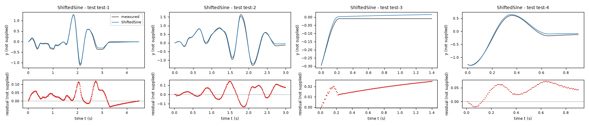
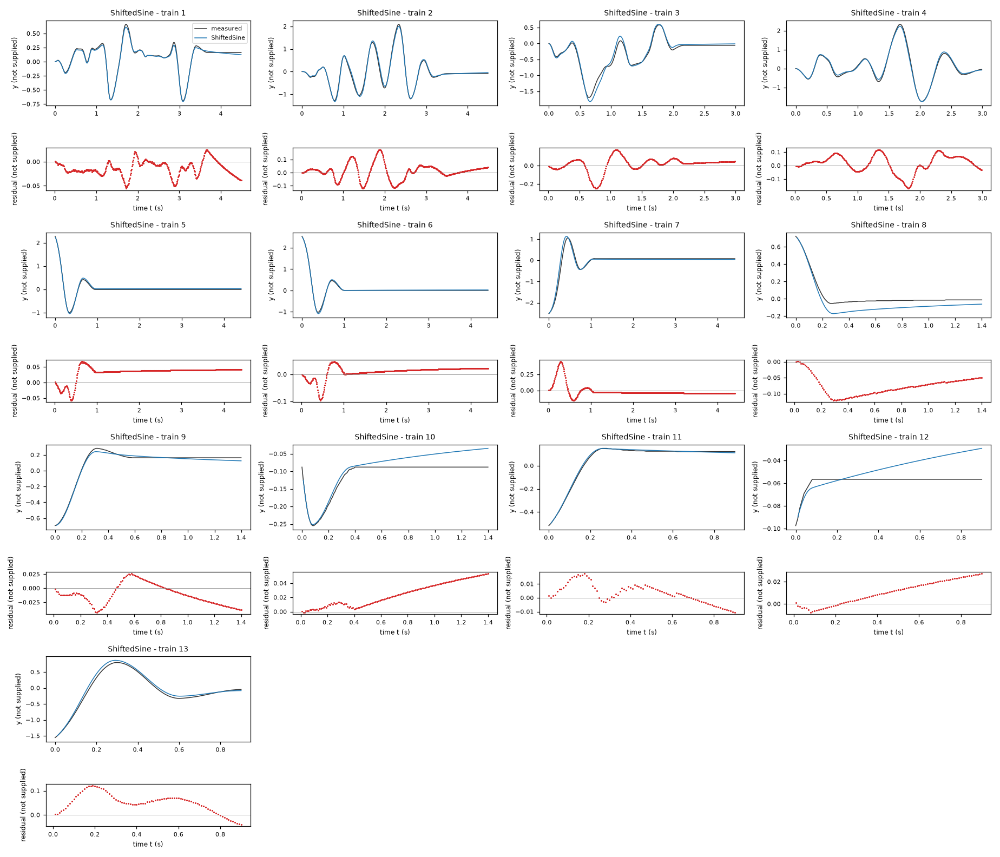
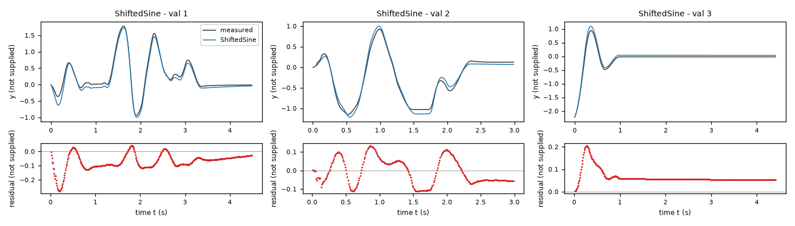
| Data | Trajectory | Scored samples | RMSE | NRMSE | R² | Failure |
|---|---|---|---|---|---|---|
| training data | 1 | 449 of 449 | 0.0207 | 0.08073 | 0.9935 | none |
| training data | 2 | 449 of 449 | 0.06032 | 0.09051 | 0.9918 | none |
| training data | 3 | 299 of 299 | 0.08078 | 0.171 | 0.9707 | none |
| training data | 4 | 299 of 299 | 0.06661 | 0.08127 | 0.9934 | none |
| training data | 5 | 441 of 441 | 0.03938 | 0.1029 | 0.9894 | none |
| training data | 6 | 441 of 441 | 0.02466 | 0.05402 | 0.9971 | none |
| training data | 7 | 441 of 441 | 0.09752 | 0.188 | 0.9647 | none |
| training data | 8 | 140 of 140 | 0.08086 | 0.4924 | 0.7575 | none |
| training data | 9 | 140 of 140 | 0.02134 | 0.0976 | 0.9905 | none |
| training data | 10 | 140 of 140 | 0.02944 | 0.5987 | 0.6416 | none |
| training data | 11 | 90 of 90 | 0.007596 | 0.04616 | 0.9979 | none |
| training data | 12 | 90 of 90 | 0.01466 | 2.873 | -7.255 | none |
| training data | 13 | 90 of 90 | 0.06368 | 0.1172 | 0.9863 | none |
| validation data | 1 | 449 of 449 | 0.09067 | 0.1658 | 0.9725 | none |
| validation data | 2 | 299 of 299 | 0.07011 | 0.1254 | 0.9843 | none |
| validation data | 3 | 441 of 441 | 0.07246 | 0.1928 | 0.9628 | none |
| test data | test-1 | 449 of 449 | 0.04164 | 0.1103 | 0.9878 | none |
| test data | test-2 | 299 of 299 | 0.06671 | 0.1079 | 0.9883 | none |
| test data | test-3 | 140 of 140 | 0.01896 | 0.3582 | 0.8717 | none |
| test data | test-4 | 90 of 90 | 0.048 | 0.0909 | 0.9917 | none |
RMSE of y; NRMSE = RMSE / σ and R² = 1 − SSE / Σ(y[k] − μ)², with μ and σ the mean and the population standard deviation of the measured output on the scored samples.
a = 125 recorded x1 unit/s (fitted), b = 1.61 s^-1 (fitted), c = 27.78 recorded x1 unit/(recorded x2 unit*s) (fitted), f = 20.99 recorded x1 unit/s (fitted), s = 0.1 recorded x1 unit (fitted), ell = 9.966 recorded x1 unit/(recorded y unit*s) (fitted), harm = 3.038 recorded x1 unit/s (fitted)y: 0.04673 · validation error: 0.08158 · test error: 0.047Equations as written in the model file
dy = x1
dx1 = -a*sin(y) + ell*y + harm*cos(y) - b*x1 + c*x2 - f*tanh(x1/s)
Equations with the values substituted
Every parameter is replaced by its value with 4 significant digits.
Parameters and estimation
| Name | Value | Unit | Type | Description |
|---|---|---|---|---|
a | 124.987 | recorded x1 unit/s | fitted | Restoring amplitude multiplying the sine of the coordinate; estimated jointly by output-error fitting. |
b | 1.60998 | s^-1 | fitted | Linear velocity damping rate; estimated jointly by output-error fitting. |
c | 27.775 | recorded x1 unit/(recorded x2 unit*s) | fitted | Linear input forcing gain; estimated jointly by output-error fitting. |
f | 20.9947 | recorded x1 unit/s | fitted | Magnitude of the saturating velocity-opposing term; estimated jointly by output-error fitting. |
s | 0.1 | recorded x1 unit | fitted | Velocity transition scale; estimated jointly by output-error fitting within the stated bounds. |
ell | 9.96627 | recorded x1 unit/(recorded y unit*s) | fitted | Linear coordinate correction coefficient; estimated jointly by output-error fitting. |
harm | 3.03785 | recorded x1 unit/s | fitted | Cosine restoring correction amplitude; estimated jointly by output-error fitting. |
- Criterion minimized
Unweighted sum of squared output errors over every sample after the first of each training trajectory. Each rollout starts at its own logged initial
yandx1, holdsx2constant between samples, and uses classical fourth-order Runge-Kutta with s. Simulated states are never reset to later observations. This output-error criterion matches the task score and avoids relying on noisy finite-difference acceleration as a final target;dx1was used only in exploratory structure selection and initialization. Equal sample weights follow the task scoring rule.- Data
data/train.csv, all 13 trajectories and all samples; the first row of each is initialization, not an error term. No training trajectory was excluded. data/val.csv, all three trajectories, was reserved for uninterrupted rollout comparison and residual inspection. Derivative regressions used the supplied training
dx1; final estimates use trainingyonly.- Method
Bound-constrained nonlinear least squares by scipy.optimize.least_squares, method trf (trust-region reflective), finite-difference Jacobian, linear least-squares loss, and x_scale=jac. This method directly minimizes the nonlinear rollout criterion; ordinary least squares cannot solve that final criterion. All listed fitted parameters were estimated jointly. Three deterministic starts used the same other coefficients and , , and in recorded
x1units. Coefficients were rounded plausible values informed by derivative regressions, with near-zero extra corrections; the three widths test sensitivity to the initially unknown sharpness. The retained fit had the lowest training criterion among these starts, not the lowest validation error. Its full starting values were recorded x1 unit/s; s^-1; recorded x1 unit/(recorded x2 unit*s); recorded x1 unit/s; recorded x1 unit; recorded x1 unit/(recorded y unit*s); recorded x1 unit/s. Bounds were recorded x1 unit/s; s^-1; recorded x1 unit/(recorded x2 unit*s); recorded x1 unit/s; recorded x1 unit; recorded x1 unit/(recorded y unit*s); recorded x1 unit/s. Positive restoring amplitude, damping, input gain, and friction prevent sign-reversed degenerate fits; remaining broad bounds limit implausible extrapolation. The lower bound in recordedx1units regularizes sharp transitions for fixed-step RK4; the attained lower bound does not resolve the true transition width. Tolerances were , , , and the maximum was 300 function evaluations. No random numbers or seed were used. Reference: SciPy API documentation for scipy.optimize.least_squares; its implementation and options were used through the installed SciPy package. Numba JIT compilation accelerated a hand-coded RK4 simulator without changing the model equations. The reproducibility script isfit_final.py;make_submission.pycopies its saved winning parameters into the deliverables.- Script
fit_final.py
The agent's explanation
Linear-in-basis restoring-force model using first trigonometric harmonics and a linear coordinate term, coupled to nonlinear smooth friction. This is an empirical nonlinear state-space family, not a derived physical law.
The state y is the scored logged coordinate; x1 is its velocity-like state; x2 is the logged exogenous input. The equation supplies the kinematic relationship. The term damps velocity, with b its rate coefficient; supplies linear forcing, with c its gain. These are mathematical effects, not established physical mechanisms. The term is odd periodic restoration; changes the local slope and the high-amplitude shape; is an even coordinate-dependent acceleration correction. The term supplies saturating velocity opposition. Here ell and harm are basis coefficients, not inferred springs or gravity directions.
Before fitting I listed affine state-space, sparse-polynomial, and nonlinear restoring/damping families with saturation and absolute-value terms. Actual exploratory work used deterministic ordinary least squares, not a genetic symbolic-regression package or PySINDy. The library compared linear, sinusoidal and cubic/quintic restoring terms, sign/tanh friction, velocity-quadratic damping, input-cubic terms and low-order interactions (explore.py and moving.py). The linear derivative model had training derivative RMSE 17.1872 in recorded x1 units/s; replacing linear restoration by sine reduced this to 12.6139, and adding sign friction reduced it to 9.6318, on all training rows. Residuals near zero velocity and nonzero final positions motivated sharp friction transitions and static gates. Central finite differences verified at interior samples to roundoff, with s, so was fixed rather than fitted. Sine restoration is an oscillator analogy inferred from data, not supplied physical knowledge. Scaled-sine fits substantially reduced training error in large-amplitude free trajectories, but validation did not improve relative to the simpler shifted sine. The alternative basis allows curvature and asymmetry to vary separately. These terms were manually proposed in response to the displacement-binned and per-trajectory residuals, then fitted simultaneously.
Physical state and input units, apparatus, intended use, and noise statistics are not supplied. A recorded unit in parameter metadata means the numerical coordinate unit of its named column, not an invented physical unit. Sine arguments use the logged numerical y coordinate; no angular calibration is established. Treating the state/input as sufficient for a two-state autonomous vector field is an assumption imposed by the task. Central-difference derivatives of quantized positions are not independent exact acceleration measurements. No parameter confidence intervals were calculated. Training and validation rollouts are finite and do not establish global validity or stability under arbitrary forcing. The validation set was used for model comparison, not for fitting any delivered parameter. The linear correction has a positive fitted coefficient and therefore creates anti-restoration at sufficiently large displacement when it dominates the bounded harmonics. Its better training score is not matched by the best validation score. The sine and linear basis coefficients may be correlated over limited displacement spans, so individual terms have no identified physical interpretation. Training rollout RMSE was 0.04672833372888441 in recorded y units; validation rollout RMSE was 0.08157536011092963 in recorded y units. Validation per-trajectory RMSEs, in trajectory order, were 0.09781594566216435, 0.0674033937203751, 0.07155245763093791 in recorded y units. Validation mean signed error was in recorded y units, but its near-zero pooled value masks trajectory-dependent bias: validation trajectory 1 is underpredicted on average and trajectory 3 overpredicted. The validation sampled-acceleration RMSE was 16.098087453911045 in recorded x1 units/s. Full residual summaries are in selected_diagnostics.json, generated by selected_diagnostics.py. No test data were accessed.
Plots of simulated and measured y, and errors per trajectory
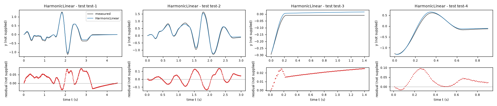
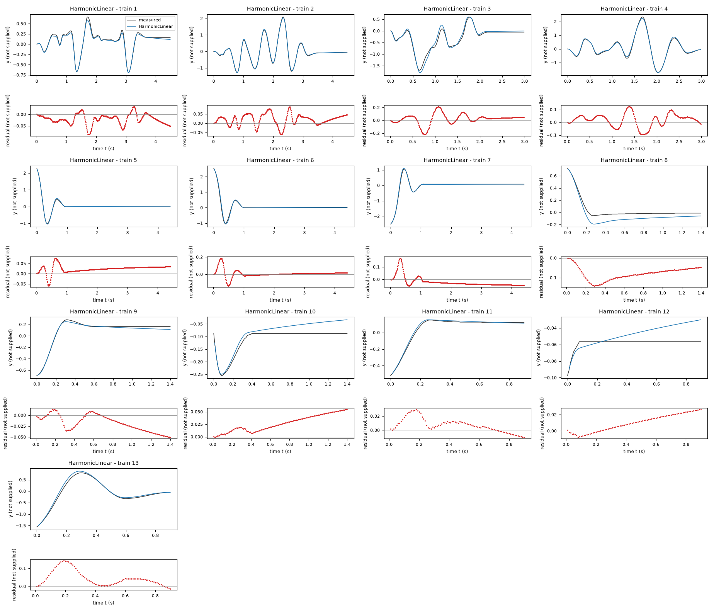
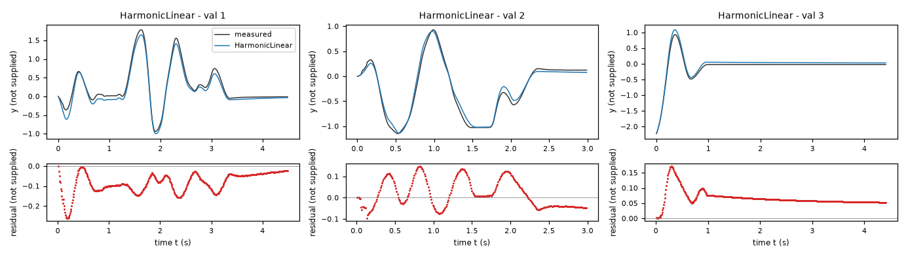
| Data | Trajectory | Scored samples | RMSE | NRMSE | R² | Failure |
|---|---|---|---|---|---|---|
| training data | 1 | 449 of 449 | 0.03019 | 0.1177 | 0.9861 | none |
| training data | 2 | 449 of 449 | 0.03595 | 0.05395 | 0.9971 | none |
| training data | 3 | 299 of 299 | 0.0828 | 0.1753 | 0.9693 | none |
| training data | 4 | 299 of 299 | 0.05313 | 0.06483 | 0.9958 | none |
| training data | 5 | 441 of 441 | 0.02999 | 0.07836 | 0.9939 | none |
| training data | 6 | 441 of 441 | 0.04374 | 0.09582 | 0.9908 | none |
| training data | 7 | 441 of 441 | 0.04594 | 0.08854 | 0.9922 | none |
| training data | 8 | 140 of 140 | 0.0847 | 0.5158 | 0.734 | none |
| training data | 9 | 140 of 140 | 0.02526 | 0.1155 | 0.9867 | none |
| training data | 10 | 140 of 140 | 0.03138 | 0.6381 | 0.5928 | none |
| training data | 11 | 90 of 90 | 0.01203 | 0.07311 | 0.9947 | none |
| training data | 12 | 90 of 90 | 0.01418 | 2.778 | -6.72 | none |
| training data | 13 | 90 of 90 | 0.06189 | 0.1139 | 0.987 | none |
| validation data | 1 | 449 of 449 | 0.09782 | 0.1789 | 0.968 | none |
| validation data | 2 | 299 of 299 | 0.0674 | 0.1206 | 0.9855 | none |
| validation data | 3 | 441 of 441 | 0.07155 | 0.1904 | 0.9638 | none |
| test data | test-1 | 449 of 449 | 0.03943 | 0.1044 | 0.9891 | none |
| test data | test-2 | 299 of 299 | 0.06448 | 0.1043 | 0.9891 | none |
| test data | test-3 | 140 of 140 | 0.02037 | 0.3848 | 0.8519 | none |
| test data | test-4 | 90 of 90 | 0.04227 | 0.08004 | 0.9936 | none |
RMSE of y; NRMSE = RMSE / σ and R² = 1 − SSE / Σ(y[k] − μ)², with μ and σ the mean and the population standard deviation of the measured output on the scored samples.
a = 111.5 s-2 (fitted), b = 1.72 s^-1 (fitted), c = 28.59 recorded x1 unit/(recorded x2 unit*s) (fitted), f = 20.76 recorded x1 unit/s (fitted), s = 0.1 recorded x1 unit (fitted), q = 15.27 recorded x1 unit/(recorded y unit^3*s) (fitted), bias = 1.57 recorded x1 unit/s (fitted)y: 0.05335 · validation error: 0.08241 · test error: 0.03991Equations as written in the model file
dy = x1
dx1 = -a*y + q*y**3 - b*x1 + c*x2 - f*tanh(x1/s) + bias
Equations with the values substituted
Every parameter is replaced by its value with 4 significant digits.
Parameters and estimation
| Name | Value | Unit | Type | Description |
|---|---|---|---|---|
a | 111.532 | s-2 | fitted | Linear restoring coefficient multiplying the coordinate; estimated jointly by output-error fitting. |
b | 1.72015 | s^-1 | fitted | Linear velocity damping rate; estimated jointly by output-error fitting. |
c | 28.5901 | recorded x1 unit/(recorded x2 unit*s) | fitted | Linear input forcing gain; estimated jointly by output-error fitting. |
f | 20.7562 | recorded x1 unit/s | fitted | Magnitude of the saturating velocity-opposing term; estimated jointly by output-error fitting. |
s | 0.1 | recorded x1 unit | fitted | Velocity transition scale; estimated jointly by output-error fitting within the stated bounds. |
q | 15.2716 | recorded x1 unit/(recorded y unit^3*s) | fitted | Cubic restoring coefficient; estimated jointly by output-error fitting. |
bias | 1.56962 | recorded x1 unit/s | fitted | Constant acceleration offset; estimated jointly by output-error fitting. |
- Criterion minimized
Unweighted sum of squared output errors over every sample after the first of each training trajectory. Each rollout starts at its own logged initial
yandx1, holdsx2constant between samples, and uses classical fourth-order Runge-Kutta with s. Simulated states are never reset to later observations. This output-error criterion matches the task score and avoids relying on noisy finite-difference acceleration as a final target;dx1was used only in exploratory structure selection and initialization. Equal sample weights follow the task scoring rule.- Data
data/train.csv, all 13 trajectories and all samples; the first row of each is initialization, not an error term. No training trajectory was excluded. data/val.csv, all three trajectories, was reserved for uninterrupted rollout comparison and residual inspection. Derivative regressions used the supplied training
dx1; final estimates use trainingyonly.- Method
Bound-constrained nonlinear least squares by scipy.optimize.least_squares, method trf (trust-region reflective), finite-difference Jacobian, linear least-squares loss, and x_scale=jac. This method directly minimizes the nonlinear rollout criterion; ordinary least squares cannot solve that final criterion. All listed fitted parameters were estimated jointly. Three deterministic starts used the same other coefficients and , , and in recorded
x1units. Coefficients were rounded plausible values informed by derivative regressions, with near-zero extra corrections; the three widths test sensitivity to the initially unknown sharpness. The retained fit had the lowest training criterion among these starts, not the lowest validation error. Its full starting values were s-2; s^-1; recorded x1 unit/(recorded x2 unit*s); recorded x1 unit/s; recorded x1 unit; recorded x1 unit/(recorded y unit^3*s); recorded x1 unit/s. Bounds were s-2; s^-1; recorded x1 unit/(recorded x2 unit*s); recorded x1 unit/s; recorded x1 unit; recorded x1 unit/(recorded y unit^3*s); recorded x1 unit/s. Positive restoring amplitude, damping, input gain, and friction prevent sign-reversed degenerate fits; remaining broad bounds limit implausible extrapolation. The lower bound in recordedx1units regularizes sharp transitions for fixed-step RK4; the attained lower bound does not resolve the true transition width. Tolerances were , , , and the maximum was 300 function evaluations. No random numbers or seed were used. Reference: SciPy API documentation for scipy.optimize.least_squares; its implementation and options were used through the installed SciPy package. Numba JIT compilation accelerated a hand-coded RK4 simulator without changing the model equations. The reproducibility script isfit_final.py;make_submission.pycopies its saved winning parameters into the deliverables.- Script
fit_final.py
The agent's explanation
Softening Duffing-type polynomial oscillator with smooth friction and constant forcing offset. Reference from memory, not source-checked: J. Guckenheimer and P. Holmes, Nonlinear Oscillations, Dynamical Systems, and Bifurcations of Vector Fields, Springer, 1983; only the generic oscillator family is cited, not this fitted equation.
The state y is the scored logged coordinate; x1 is its velocity-like state; x2 is the logged exogenous input. The equation supplies the kinematic relationship. The term damps velocity, with b its rate coefficient; supplies linear forcing, with c its gain. These are mathematical effects, not established physical mechanisms. The term restores toward zero with linear coefficient a; softens restoration for the positive fitted q. The term is velocity-opposing saturation with amplitude f and width s; bias shifts acceleration by a constant.
Before fitting I listed affine state-space, sparse-polynomial, and nonlinear restoring/damping families with saturation and absolute-value terms. Actual exploratory work used deterministic ordinary least squares, not a genetic symbolic-regression package or PySINDy. The library compared linear, sinusoidal and cubic/quintic restoring terms, sign/tanh friction, velocity-quadratic damping, input-cubic terms and low-order interactions (explore.py and moving.py). The linear derivative model had training derivative RMSE 17.1872 in recorded x1 units/s; replacing linear restoration by sine reduced this to 12.6139, and adding sign friction reduced it to 9.6318, on all training rows. Residuals near zero velocity and nonzero final positions motivated sharp friction transitions and static gates. Central finite differences verified at interior samples to roundoff, with s, so was fixed rather than fitted. Sine restoration is an oscillator analogy inferred from data, not supplied physical knowledge. The polynomial alternative was specified before fitting. Cubic restoration fit derivative data better than affine restoration and nearly as well as sine-plus-friction. The constant bias was subsequently included because signed output residuals were not centered in all trajectories. The cubic is an empirical polynomial basis term, not a claim that sine was exactly Taylor-expanded with known coefficients. A quintic derivative fit produced only a small improvement, so it was not added.
Physical state and input units, apparatus, intended use, and noise statistics are not supplied. A recorded unit in parameter metadata means the numerical coordinate unit of its named column, not an invented physical unit. Sine arguments use the logged numerical y coordinate; no angular calibration is established. Treating the state/input as sufficient for a two-state autonomous vector field is an assumption imposed by the task. Central-difference derivatives of quantized positions are not independent exact acceleration measurements. No parameter confidence intervals were calculated. Training and validation rollouts are finite and do not establish global validity or stability under arbitrary forcing. The validation set was used for model comparison, not for fitting any delivered parameter. This is a local softening polynomial model: eventually overcomes outside the observed displacement range and can cause divergence. It should not be extrapolated to large excursions. A fitted constant offset cannot explain history-dependent resting positions. The fitted transition width reaches its lower bound. Training rollout RMSE was 0.05334542764915746 in recorded y units; validation rollout RMSE was 0.08240743982203075 in recorded y units. Validation per-trajectory RMSEs, in trajectory order, were 0.10377450314552686, 0.06316444988644504, 0.06811689163059483 in recorded y units. Validation mean signed error was in recorded y units, but its near-zero pooled value masks trajectory-dependent bias: validation trajectory 1 is underpredicted on average and trajectory 3 overpredicted. The validation sampled-acceleration RMSE was 16.180958850256143 in recorded x1 units/s. Full residual summaries are in selected_diagnostics.json, generated by selected_diagnostics.py. No test data were accessed.
Plots of simulated and measured y, and errors per trajectory
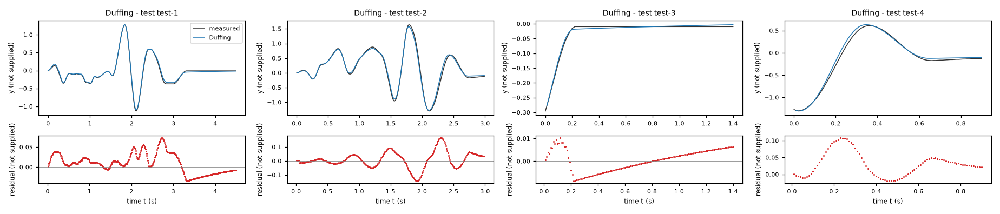
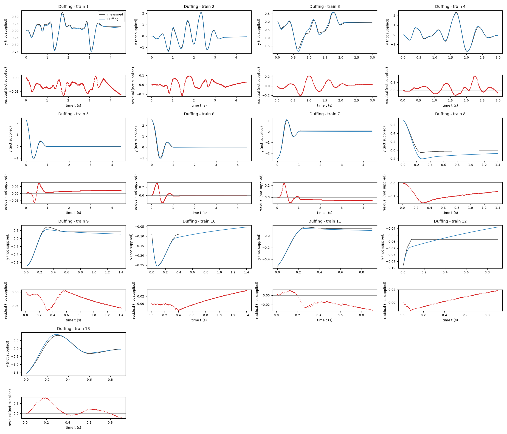
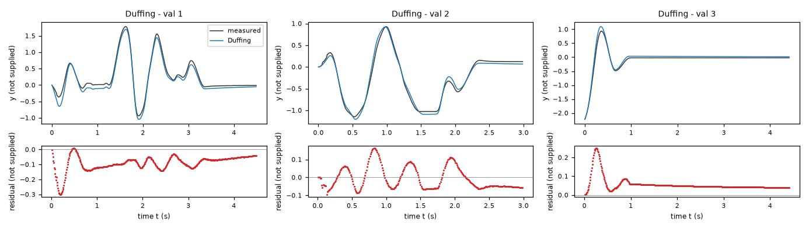
| Data | Trajectory | Scored samples | RMSE | NRMSE | R² | Failure |
|---|---|---|---|---|---|---|
| training data | 1 | 449 of 449 | 0.03373 | 0.1315 | 0.9827 | none |
| training data | 2 | 449 of 449 | 0.04002 | 0.06005 | 0.9964 | none |
| training data | 3 | 299 of 299 | 0.08163 | 0.1729 | 0.9701 | none |
| training data | 4 | 299 of 299 | 0.05393 | 0.0658 | 0.9957 | none |
| training data | 5 | 441 of 441 | 0.02345 | 0.06127 | 0.9962 | none |
| training data | 6 | 441 of 441 | 0.06473 | 0.1418 | 0.9799 | none |
| training data | 7 | 441 of 441 | 0.06444 | 0.1242 | 0.9846 | none |
| training data | 8 | 140 of 140 | 0.098 | 0.5968 | 0.6439 | none |
| training data | 9 | 140 of 140 | 0.03402 | 0.1556 | 0.9758 | none |
| training data | 10 | 140 of 140 | 0.01692 | 0.3442 | 0.8815 | none |
| training data | 11 | 90 of 90 | 0.01923 | 0.1169 | 0.9863 | none |
| training data | 12 | 90 of 90 | 0.009785 | 1.918 | -2.678 | none |
| training data | 13 | 90 of 90 | 0.06525 | 0.1201 | 0.9856 | none |
| validation data | 1 | 449 of 449 | 0.1038 | 0.1898 | 0.964 | none |
| validation data | 2 | 299 of 299 | 0.06316 | 0.113 | 0.9872 | none |
| validation data | 3 | 441 of 441 | 0.06812 | 0.1812 | 0.9672 | none |
| test data | test-1 | 449 of 449 | 0.02632 | 0.0697 | 0.9951 | none |
| test data | test-2 | 299 of 299 | 0.0591 | 0.09562 | 0.9909 | none |
| test data | test-3 | 140 of 140 | 0.004729 | 0.08933 | 0.992 | none |
| test data | test-4 | 90 of 90 | 0.04707 | 0.08914 | 0.9921 | none |
RMSE of y; NRMSE = RMSE / σ and R² = 1 − SSE / Σ(y[k] − μ)², with μ and σ the mean and the population standard deviation of the measured output on the scored samples.
a = 110.5 recorded x1 unit/s (fitted), b = 1.858 s^-1 (fitted), c = 28.07 recorded x1 unit/(recorded x2 unit*s) (fitted), f = 19.46 recorded x1 unit/s (fitted), s = 0.1364 recorded x1 unit (fitted), delta = -0.02905 (fitted), fs = 15.03 recorded x1 unit/s (fitted), h = 100 s^-1 (fixed)y: 0.05612 · validation error: 0.08586 · test error: 0.04611Equations as written in the model file
dy = x1
dx1 = Piecewise((-h*x1, (Abs(x1) < s) & (Abs((-a*sin(y + delta) + c*x2)) < fs)), ((-a*sin(y + delta) + c*x2) - b*x1 - f*sign(x1), True))
Equations with the values substituted
Every parameter is replaced by its value with 4 significant digits.
Parameters and estimation
| Name | Value | Unit | Type | Description |
|---|---|---|---|---|
a | 110.463 | recorded x1 unit/s | fitted | Restoring amplitude multiplying the sine of the coordinate; estimated jointly by output-error fitting. |
b | 1.85791 | s^-1 | fitted | Linear velocity damping rate; estimated jointly by output-error fitting. |
c | 28.0693 | recorded x1 unit/(recorded x2 unit*s) | fitted | Linear input forcing gain; estimated jointly by output-error fitting. |
f | 19.4563 | recorded x1 unit/s | fitted | Magnitude of the saturating velocity-opposing term; estimated jointly by output-error fitting. |
s | 0.136353 | recorded x1 unit | fitted | Velocity transition scale; estimated jointly by output-error fitting within the stated bounds. |
delta | -0.0290524 | - | fitted | Dimensionless phase shift of the numerical sine argument; estimated jointly by output-error fitting. |
fs | 15.0268 | recorded x1 unit/s | fitted | Magnitude threshold for the force-gated low-speed branch; estimated jointly by output-error fitting, independently of the sliding magnitude. |
h | 100 | s^-1 | fixed | Velocity-decay rate in the low-speed gate. Chosen as h = 1/Ts = 100 s^-1 with s from TASK.md, so the regularized stopping time is one sample. This is a numerical regularization choice, not an estimated physical relaxation rate. |
- Criterion minimized
Unweighted sum of squared output errors over every sample after the first of each training trajectory. Each rollout starts at its own logged initial
yandx1, holdsx2constant between samples, and uses classical fourth-order Runge-Kutta with s. Simulated states are never reset to later observations. This output-error criterion matches the task score and avoids relying on noisy finite-difference acceleration as a final target;dx1was used only in exploratory structure selection and initialization. Equal sample weights follow the task scoring rule.- Data
data/train.csv, all 13 trajectories and all samples; the first row of each is initialization, not an error term. No training trajectory was excluded. data/val.csv, all three trajectories, was reserved for uninterrupted rollout comparison and residual inspection. Derivative regressions used the supplied training
dx1; final estimates use trainingyonly.- Method
Differential evolution by scipy.optimize.differential_evolution minimized the square root of the same mean squared output error, which has the same optimum as the sum of squares. All fitted parameters were estimated jointly. This derivative-free population method was chosen because switching gates make local finite-difference optimization unreliable, as demonstrated by an earlier sign-friction fit. Bounds were recorded x1 unit/s; s^-1; recorded x1 unit/(recorded x2 unit*s); recorded x1 unit/s; recorded x1 unit; dimensionless; recorded x1 unit/s. They bracketed the preceding smooth-friction fits and allowed a separate gate threshold. The differential-evolution defaults were strategy best1bin, Latin-hypercube initialization, mutation interval
(0.5, 1.0), recombination0.7, immediate updating, and one worker; no single numerical starting vector applies. The pseudorandom seed was , , , , and . Population members were initialized within the given bounds, with no prior solution inserted. The run used 25284 objective evaluations and reached the iteration limit, so global convergence is not claimed. The fixed low-velocity decay rate was not estimated. Reference: SciPy API documentation for scipy.optimize.differential_evolution; the installed implementation was used. Numba JIT compilation accelerated a hand-coded RK4 simulator without changing the model equations. The reproducibility script isfit_friction.py;make_submission.pycopies its saved winning parameters into the deliverables.- Script
fit_friction.py
The agent's explanation
Force-gated hybrid stick/slip oscillator, inspired by Karnopp-style near-zero-velocity gating but with an explicit exponential velocity-decay regularization. Reference from memory, not source-checked: D. Karnopp, Computer Simulation of Stick-Slip Friction in Mechanical Dynamic Systems, Journal of Dynamic Systems, Measurement, and Control, 1985. This delivered equation is an empirical adaptation, not claimed identical to that paper.
The state y is the scored logged coordinate; x1 is its velocity-like state; x2 is the logged exogenous input. The equation supplies the kinematic relationship. The term damps velocity, with b its rate coefficient; supplies linear forcing, with c its gain. These are mathematical effects, not established physical mechanisms. Define the driving acceleration expression . If and its magnitude is below fs, decays the residual velocity, allowing nearly stationary states at different coordinates. Outside that gate, gives linear damping and gives signed sliding opposition. The threshold fs, sliding magnitude f, velocity gate width s, and fixed decay rate h are separate quantities; fs is a mathematical gate threshold and is not asserted to be a true static-friction coefficient.
Before fitting I listed affine state-space, sparse-polynomial, and nonlinear restoring/damping families with saturation and absolute-value terms. Actual exploratory work used deterministic ordinary least squares, not a genetic symbolic-regression package or PySINDy. The library compared linear, sinusoidal and cubic/quintic restoring terms, sign/tanh friction, velocity-quadratic damping, input-cubic terms and low-order interactions (explore.py and moving.py). The linear derivative model had training derivative RMSE 17.1872 in recorded x1 units/s; replacing linear restoration by sine reduced this to 12.6139, and adding sign friction reduced it to 9.6318, on all training rows. Residuals near zero velocity and nonzero final positions motivated sharp friction transitions and static gates. Central finite differences verified at interior samples to roundoff, with s, so was fixed rather than fitted. Sine restoration is an oscillator analogy inferred from data, not supplied physical knowledge. Persistent nonzero resting positions and residuals concentrated near zero speed motivated a force-gated branch that smooth tanh friction lacks. An earlier piecewise attempt used zero acceleration inside the gate and local least squares; it could preserve a nonzero velocity and was difficult to optimize. This version uses and differential evolution to search the switching landscape. The structure was manually designed; population search estimates parameters, not symbolic structure.
Physical state and input units, apparatus, intended use, and noise statistics are not supplied. A recorded unit in parameter metadata means the numerical coordinate unit of its named column, not an invented physical unit. Sine arguments use the logged numerical y coordinate; no angular calibration is established. Treating the state/input as sufficient for a two-state autonomous vector field is an assumption imposed by the task. Central-difference derivatives of quantized positions are not independent exact acceleration measurements. No parameter confidence intervals were calculated. Training and validation rollouts are finite and do not establish global validity or stability under arbitrary forcing. The validation set was used for model comparison, not for fitting any delivered parameter. Switching surfaces make estimates and trajectories sensitive to small state and coefficient changes. The optimized force-gate threshold is smaller than the sliding magnitude; this is an empirical numerical gate, not evidence for a conventional static/kinetic friction law. The fixed decay rate depends on the task sampling interval, and behavior at other sampling rates is not validated. Differential evolution reached its iteration limit. Training rollout RMSE was 0.056124709367311516 in recorded y units; validation rollout RMSE was 0.08586466470760443 in recorded y units. Validation per-trajectory RMSEs, in trajectory order, were 0.09915533726495035, 0.0707427992936414, 0.08046577063641597 in recorded y units. Validation mean signed error was in recorded y units, but its near-zero pooled value masks trajectory-dependent bias: validation trajectory 1 is underpredicted on average and trajectory 3 overpredicted. The validation sampled-acceleration RMSE was 15.504273517446263 in recorded x1 units/s. Full residual summaries are in selected_diagnostics.json, generated by selected_diagnostics.py. No test data were accessed.
Plots of simulated and measured y, and errors per trajectory
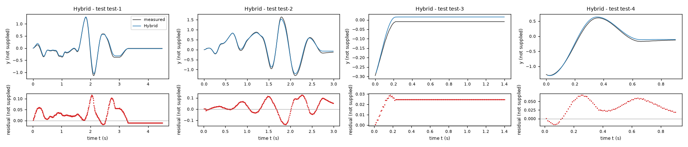
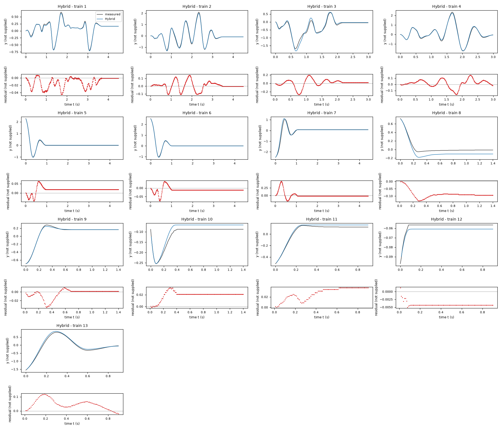
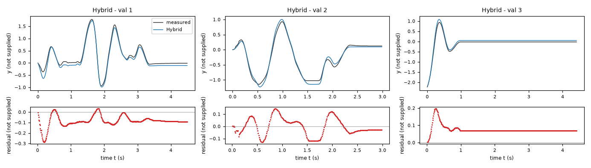
| Data | Trajectory | Scored samples | RMSE | NRMSE | R² | Failure |
|---|---|---|---|---|---|---|
| training data | 1 | 449 of 449 | 0.01806 | 0.07042 | 0.995 | none |
| training data | 2 | 449 of 449 | 0.05503 | 0.08257 | 0.9932 | none |
| training data | 3 | 299 of 299 | 0.08628 | 0.1827 | 0.9666 | none |
| training data | 4 | 299 of 299 | 0.06421 | 0.07835 | 0.9939 | none |
| training data | 5 | 441 of 441 | 0.02296 | 0.05998 | 0.9964 | none |
| training data | 6 | 441 of 441 | 0.01898 | 0.04159 | 0.9983 | none |
| training data | 7 | 441 of 441 | 0.09619 | 0.1854 | 0.9656 | none |
| training data | 8 | 140 of 140 | 0.09104 | 0.5543 | 0.6927 | none |
| training data | 9 | 140 of 140 | 0.01058 | 0.0484 | 0.9977 | none |
| training data | 10 | 140 of 140 | 0.02058 | 0.4185 | 0.8248 | none |
| training data | 11 | 90 of 90 | 0.02903 | 0.1764 | 0.9689 | none |
| training data | 12 | 90 of 90 | 0.004215 | 0.8262 | 0.3174 | none |
| training data | 13 | 90 of 90 | 0.05813 | 0.107 | 0.9886 | none |
| validation data | 1 | 449 of 449 | 0.09916 | 0.1813 | 0.9671 | none |
| validation data | 2 | 299 of 299 | 0.07074 | 0.1265 | 0.984 | none |
| validation data | 3 | 441 of 441 | 0.08047 | 0.2141 | 0.9542 | none |
| test data | test-1 | 449 of 449 | 0.03818 | 0.1011 | 0.9898 | none |
| test data | test-2 | 299 of 299 | 0.06311 | 0.1021 | 0.9896 | none |
| test data | test-3 | 140 of 140 | 0.02427 | 0.4585 | 0.7898 | none |
| test data | test-4 | 90 of 90 | 0.0411 | 0.07784 | 0.9939 | none |
RMSE of y; NRMSE = RMSE / σ and R² = 1 − SSE / Σ(y[k] − μ)², with μ and σ the mean and the population standard deviation of the measured output on the scored samples.
2 Course of the run
The system prompt, TASK.md and FORMAT.md that the agent received are shown on the page of the experiment.
0:00Harness: opening message to the agent
10:05Read TASK.md0.01
5,474 input and 19 output tokens; 0.011 USD for this turn.
TASK.md
output as sent to the agent (3,688 characters, 38 lines)
[TASK.md: 3661 characters] # Task: Identification task jdhj ## 1 System and intended use The task gives no description of the system. The task states no intended use of the model. ## 2 Data `data/train.csv` holds 3522 samples of training data: 13 trajectories of 450, 450, 300, 300, 442, 442, 442, 141, 141, 141, 91, 91, 91 consecutive samples; the column `trajectory` holds the trajectory number. `data/val.csv` holds 1192 samples of validation data: 3 trajectories of 450, 300, 442 consecutive samples; the column `trajectory` holds the trajectory number. Whether and how you use the validation data is your decision. Row k+1 of a trajectory is the sample that follows row k; different trajectories are separate experiments. The sampling period is T_s = 0.01 s. | Column | Role | Unit | Training range | Description | |---|---|---|---|---| | `y` | state, scored output | not supplied | not declared | not supplied | | `x1` | state | not supplied | not declared | not supplied | | `x2` | input | not supplied | not declared | not supplied | | `dx1` | sampled time derivative of `x1` | not supplied | not declared | not supplied | The task does not state the units. The task does not describe the columns. ## 3 What you deliver A candidate is a continuous-time model of 2 closed-form expressions, `dy` and `dx1`: the time derivatives of the states `y` and `x1` as functions of `y`, `x1` and `x2`. The column `dx1` is a possible fitting target for the derivative of `x1`; it is not an argument of the expressions. `FORMAT.md` states how an expression is written and what it may contain. Write one file per candidate, `models/<label>.json`; `FORMAT.md` describes the file and gives an example. Write also `models/pool.json`, which lists the labels of your candidates in the order in which they are to be evaluated. You can recommend one candidate that you consider the best-performing. `models/pool.json` then names that candidate and gives your reason. Run `python check_submission.py` to check your files: it prints every error with its location, so that you can correct it. At most 10 candidates are evaluated, in the order of `models/pool.json`. Consider various identification approaches, for example physically motivated structures, symbolic-regression search or sparse regression; before fitting, list the approaches and the model families you will try. Build the pool from structurally different model families, not from variations of one form. Examine the residuals of your best candidates and try structures that can represent what they show. Include only candidates you would defend as a model of the system. ## 4 Evaluation The harness, the software that runs this task, evaluates every candidate on test data that you cannot access. For each test trajectory it starts from the first logged state and integrates the expressions with the classical fourth-order Runge–Kutta method, one step per sampling period, with the logged inputs held constant between samples; a simulated state is never replaced by a later measurement. The score is the root mean squared error (RMSE) between simulated and logged `y` over all test samples after the first of each trajectory. An evaluation fails when a value is not finite, when `y` leaves [-1000, 1000] or `x1` leaves [-1000, 1000], or when it takes longer than 60 s. ## 5 Limits and completion One round: 60 turns, 3600 s of execution time, 10 USD; a turn is one response of yours. When the files pass the check, send the exact message DONE. If the harness's check of the files then fails, you receive its report and may correct the files once. If a limit ends the round earlier, the complete candidate files are evaluated.
20:07Read FORMAT.md0.02
6,371 input and 19 output tokens; 0.013 USD for this turn.
FORMAT.md
output as sent to the agent (8,159 characters, 128 lines)
[FORMAT.md: 8130 characters]
# Model file format
This file is the same for every task. `TASK.md` names the expression keys, the variables and the permitted functions of your task.
## Candidate file `models/<label>.json`
Write one JSON file per candidate. The label is the file name: a letter, then up to 31 letters, digits, `_` or `-`. The file has these fields and no others:
- `expressions`: one expression text per expression key named in `TASK.md`.
- `parameters`: one row per parameter. A parameter is a constant of the expressions that you name yourself, for example `a1`. Its row has
- `name`: the name used in the expressions: a letter, then letters, digits or `_`; it differs from every column, expression key, constant and function name;
- `value`: the numerical value;
- `unit`: the unit; `-` for a dimensionless quantity;
- `type`: `fitted` (estimated from data), `fixed` (chosen or known, not estimated) or `tied` (computed from other parameters by `equation`);
- `description`: what the parameter represents; for a fixed value, where the value comes from and why it was chosen; for a value taken over from another candidate or an earlier fit, from which one;
- `equation`: for a tied parameter only: its defining equation over other parameters, given constants and numbers.
- `estimation`: how the values of the fitted parameters of this candidate were obtained and why in this way; for every fitted parameter it must be clear how its value was found. Write the record for this candidate model, not for the run as a whole: its own criterion, data, method and starting values, with the reasons that apply to this candidate. The record has
- `criterion`: what was minimized, on which variable, and why this criterion;
- `data`: the files, trajectories or rows used, and the reason when some were left out;
- `method`: how the values were estimated: the estimation method by its established name and the software function, and why this method and not another; the starting values as numbers, or the statement that the method needs none, and why these starting values; whether all fitted parameters were estimated together in one step and, if not, which parameters were estimated in which step, with which criterion, and why; the seeds where they apply;
- `script`: the file in the working directory that reproduces the values.
- `discussion`: four texts, in this order:
- `family`: the model family by its established name, with a reference where you know one;
- `interpretation`: what each term represents in the system; describe a term without a known physical meaning by its mathematical effect;
- `origin`: how you arrived at the structure of this expression, as distinct from its parameter values, which `estimation` covers: say which of its terms, variables and operators came from physical reasoning, which from a search and which from a guess, what you tried before, and what made you change it;
- `limitations`: what the data do not determine and where the model is not expected to hold.
- `answers`: only when `TASK.md` asks questions about the candidates: one text per question identifier.
- `predecessor`: only in a later round of an interactive session, and optional: the label of the candidate of the previous pool that this candidate revises.
## Expressions
An expression is a text in Python syntax. It may contain:
- the variables that `TASK.md` names as the arguments of the expression;
- your parameters, each with a row in `parameters`;
- the constants `pi` and `E`, the given constants that `TASK.md` lists, and numbers;
- these operators and functions, unless `TASK.md` states another list: `+` `-` `*` `/` `**` `sin` `cos` `tan` `asin` `acos` `atan` `atan2` `sinh` `cosh` `tanh` `exp` `log` `sqrt` `Abs` `sign` `Min` `Max` `Piecewise`.
`**` is the power (not `^`), and `log` is the natural logarithm. `Piecewise` takes pairs `(value, condition)` and ends with a pair `(value, True)`, for example `Piecewise((a1*q, (q > 0) & (q < 1)), (0, True))`. A condition is a comparison `<`, `<=`, `>`, `>=`, `Eq(a, b)` or `Ne(a, b)`, each in parentheses, combined with `&`, `|` and `~`.
A number that fixes the form of the expression, such as 2 in `q**2`, may be written directly. A value obtained by estimation is a parameter with a row in `parameters`, never a number written into the expression. Every parameter row must be used in an expression or in a tie equation.
## Pool file `models/pool.json`
- `order`: the candidate labels in your order;
- `recommended`: the label of the candidate you recommend, or `null` when you recommend none;
- `reason`: why you recommend this candidate, or why you recommend none.
Every file `models/<label>.json` must be listed in `order`.
## Example
An invented task with one input `q` and one output `z`, whose expression key is `z`. The example shows the format only: its model is not a proposal, and its discussion texts say what your texts must contain.
`models/M01.json`:
```json
{
"expressions": {
"z": "a1*q + b1*q**2/n0"
},
"parameters": [
{
"name": "a1",
"value": 0.5,
"unit": "-",
"type": "fitted",
"description": "coefficient of `q`"
},
{
"name": "n0",
"value": 2.0,
"unit": "-",
"type": "fixed",
"description": "normalisation of the quadratic term; chosen as the largest value of `q` in the training data, so that `b1` has the scale of `a1`"
},
{
"name": "b1",
"value": 1.0,
"unit": "-",
"type": "tied",
"equation": "2*a1",
"description": "coefficient of `q**2/n0`, tied to `a1` by the assumption stated in the discussion"
}
],
"estimation": {
"criterion": "sum of squared differences between the expression `z` and the column `z`, because the expression gives `z` directly and no row is known to be more accurate than another",
"data": "data/train.csv, all rows",
"method": "The value of `a1` was estimated by ordinary least squares with numpy.linalg.lstsq. With `b1 = 2*a1` the expression is linear in the one fitted parameter `a1`, so the least-squares solution is obtained directly and an iterative method is not needed; for the same reason the method needs no starting values. `a1` is the only fitted parameter and was estimated in one step. The method uses no random numbers, so that no seed applies.",
"script": "fit_M01.py"
},
"discussion": {
"family": "State the model family by its established name.",
"interpretation": "State what each term represents.",
"origin": "State how you arrived at this expression.",
"limitations": "State what the data do not determine and where the model is not expected to hold."
}
}
```
`models/pool.json`:
```json
{
"order": [
"M01"
],
"recommended": "M01",
"reason": "State why you recommend this candidate, or why you recommend none."
}
```
## Checking
`python check_submission.py` checks every file against these rules and evaluates each expression on the training data. It names each error with its rule. Correct the errors and run it again.
## Writing
- Define every symbol at first use.
- Give every number with its unit and the data it was computed on.
- Name methods by their established names.
- Cite a reference for a model family or a method where one applies. Cite only references you are certain exist, and say when you cite from memory without having checked the source.
- Say what is estimated, what is assumed and what is unknown.
- Give a brief reason for every choice you made: a structure, a criterion, a method, a starting value, a fixed value, a term you removed.
- Write every expression inside a text between backticks, in the syntax of the expressions, for example `a1*q**2`; write it out, do not describe it in words. This holds also for a single parameter, column or expression name, such as `a1`, for a value given to one, such as `a1 = 0.5`, and for a range, such as `0 <= a1 <= 2`. A unit follows outside the backticks; a dimensionless value has no unit and no hyphen after it.
- Describe a term without a known physical meaning by its mathematical effect; do not invent a meaning.
30:09Listed the files0.04
8,423 input and 28 output tokens (of which 12 reasoning); 0.017 USD for this turn.
{}output as sent to the agent (188 characters, 9 lines)
[.: 8 entries] data/ models/ FORMAT.md 8130 bytes TASK.md 3663 bytes check_config.json 985 bytes check_submission.py 102476 bytes data/train.csv 179789 bytes data/val.csv 65398 bytes
40:15Wrote inspect_data.py0.06
8,523 input and 256 output tokens; 0.020 USD for this turn.
I will first inspect the trajectories and derivative relationships. Before fitting, the model families I plan to compare are: affine state-space models, sparse polynomial differential equations, and nonlinear restoring-force/damping models with saturation or absolute-value terms. I will fit against the supplied derivative and estimated output derivatives, then assess the stronger candidates by uninterrupted RK4 rollouts on the validation trajectories. Residual patterns will guide any additional structures.
inspect_data.py
file content written (369 characters)
import pandas as pd, numpy as np
for fn in ['train','val']:
d=pd.read_csv('data/'+fn+'.csv');print(fn,d.head(),d.describe(),sep='\n')
for k,g in d.groupby('trajectory',sort=False):
a=g[['y','x1','x2','dx1']].to_numpy();dy=np.diff(a[:,0])/.01
print(k,len(g),'start',a[0],'range',a.min(0),a.max(0),'dy',dy.min(),dy.max(),'corr dy x1',np.corrcoef(dy,a[:-1,1])[0,1])
output as sent to the agent (40 characters, 1 lines)
Wrote 369 characters to inspect_data.py.
50:17Ran python inspect_data.py0.08
8,800 input and 21 output tokens; 0.018 USD for this turn.
$ python inspect_data.py
output as sent to the agent (5,992 characters, 49 lines)
[exit status 0]
train
y x1 x2 dx1 trajectory
0 0.000000 0.000000 1.286047 3.141593e+01 1
1 0.000000 0.314159 1.218545 2.356194e+01 1
2 0.006283 0.471239 1.087069 7.853982e+00 1
3 0.009425 0.471239 0.830988 7.853982e+00 1
4 0.015708 0.628319 0.332211 3.000000e-15 1
y x1 x2 dx1 trajectory
count 3522.000000 3522.000000 3522.000000 3.522000e+03 3522.000000
mean -0.003704 0.001204 -0.062450 1.337987e-01 5.249574
std 0.497717 3.988737 1.120932 4.360072e+01 3.168541
min -2.513274 -20.106193 -4.945106 -1.963495e+02 1.000000
25% -0.087965 0.000000 0.000000 -6.700000e-14 2.000000
50% 0.001571 0.000000 0.000000 0.000000e+00 5.000000
75% 0.122522 0.471239 0.000000 6.900000e-14 7.000000
max 2.535265 14.451326 3.952501 1.806416e+02 13.000000
1 450 start [ 0. 0. 1.2860468 31.41592654] range [ -0.69429198 -8.95353906 -3.8953069 -109.95574288] [ 0.66287605 5.81194641 3.17743971 157.07963268] dy -9.1106186954104 5.969026041820596 corr dy x1 0.9962038112528783
2 450 start [0. 0. 0.07793799 0. ] range [ -1.2849114 -20.10619298 -3.61380984 -196.34954085] [ 2.09230071 14.45132621 3.60982948 180.64157758] dy -20.106192982974697 14.765485471872 corr dy x1 0.9982125476063839
3 300 start [ 0. -0.62831853 -4.94510614 -62.83185307] range [ -1.69331844 -9.42477796 -4.94510614 -125.66370614] [ 0.58433623 8.6393798 3.95250073 157.07963268] dy -9.424777960769404 8.796459430051401 corr dy x1 0.9967149322427636
4 300 start [ 0. -0.31415927 -2.51205674 -31.41592654] range [ -1.73415914 -18.22123739 -4.25734476 -188.49555922] [ 2.33420334 13.35176878 3.58253768 172.78759595] dy -18.2212373908208 13.508848410436096 corr dy x1 0.9983720068480416
5 442 start [ 2.27765467 -4.55530935 0. -54.97787144] range [ -1.00845124 -14.76548547 0. -78.53981634] [ 2.27765467 6.91150384 0. 141.37166941] dy -14.765485471872097 6.911503837897601 corr dy x1 0.9989610840221127
6 442 start [ 2.53526527 -3.29867229 0. -39.26990817] range [ -1.01787602 -15.23672437 0. -78.53981634] [ 2.53526527 7.06858347 0. 149.22565105] dy -15.39380400259 7.225663103256502 corr dy x1 0.9989838386844745
7 442 start [-2.51327412 1.88495559 0. 15.70796327] range [ -2.51327412 -7.696902 0. -117.80972451] [ 1.05557513 13.82300768 0. 86.39379797] dy -7.8539816339745 13.823007675795095 corr dy x1 0.9989299927894035
8 141 start [ 0.72256631 -1.41371669 0. -47.1238898 ] range [ -0.05340708 -4.08407045 0. -47.1238898 ] [ 0.72256631 0.15707963 0. 47.1238898 ] dy -4.084070449666802 0.31415926535900035 corr dy x1 0.9966806329893946
9 141 start [-0.69429198 0.15707963 0. 78.53981634] range [ -0.69429198 -0.62831853 0. -47.1238898 ] [ 0.28274334 4.86946861 0. 78.53981634] dy -0.628318530718 5.0265482457437 corr dy x1 0.9971630465609678
10 141 start [-0.08796459 -3.92699082 0. 39.26990817] range [ -0.254469 -3.92699082 0. -15.70796327] [-0.08796459 0.78539816 0. 54.97787144] dy -3.7699111843078015 0.9424777960770014 corr dy x1 0.9935753349218407
11 91 start [-0.51836279 1.88495559 0. 31.41592654] range [ -0.51836279 -0.31415927 0. -39.26990817] [ 0.15079645 3.45575192 0. 31.41592654] dy -0.3141592653590014 3.4557519189488017 corr dy x1 0.9968744123808445
12 91 start [-0.09738937 0.78539816 0. -7.85398163] range [ -0.09738937 0. 0. -15.70796327] [-5.65486678e-02 7.85398163e-01 0.00000000e+00 5.30000000e-14] dy 0.0 0.9424777960769001 corr dy x1 0.9766023375103986
13 91 start [-1.55508836 5.18362788 0. 62.83185307] range [ -1.55508836 -5.96902604 0. -102.10176124] [ 0.79796453 11.15265392 0. 70.68583471] dy -6.283185307179501 11.309733552923301 corr dy x1 0.9987930973809389
val
y x1 x2 dx1 trajectory
0 0.000000 -3.141593 -2.520031 94.247780 1
1 -0.031416 -2.199115 -2.519576 78.539816 1
2 -0.043982 -1.570796 -2.518690 23.561945 1
3 -0.062832 -1.727876 -2.516965 -54.977871 1
4 -0.078540 -2.670354 -2.513604 -39.269908 1
y x1 x2 dx1 trajectory
count 1192.000000 1192.000000 1192.000000 1192.000000 1192.000000
mean 0.005324 0.194636 -0.044547 -0.013178 1.993289
std 0.537581 3.723961 1.471655 42.080756 0.865393
min -2.227389 -17.907078 -4.819706 -180.641578 1.000000
25% -0.035343 -0.157080 0.000000 -7.853982 1.000000
50% -0.021991 0.000000 0.000000 0.000000 2.000000
75% 0.126449 0.628319 0.000000 7.853982 3.000000
max 1.781283 13.194689 3.839543 212.057504 3.000000
1 450 start [ 0. -3.14159265 -2.52003121 94.24777961] range [ -0.9393362 -17.90707813 -2.91204695 -157.07963268] [ 1.78128303 10.52433539 3.83954335 212.05750412] dy -17.9070781254619 10.6814150222053 corr dy x1 0.9968786059286371
2 300 start [ 0. 0. 1.66762043 31.41592654] range [ -1.14982291 -8.32522053 -4.81970572 -180.64157758] [ 0.92991143 8.32522053 3.37971289 133.51768778] dy -8.482300164692399 8.482300164692399 corr dy x1 0.9945466182949959
3 442 start [-2.22738919 4.08407045 0. 39.26990817] range [ -2.22738919 -7.38274274 0. -109.95574288] [ 0.93619461 13.19468915 0. 78.53981634] dy -7.539822368615501 13.194689145077199 corr dy x1 0.9990249145486682
60:34Wrote explore.py0.11
11,583 input and 768 output tokens (of which 133 reasoning); 0.031 USD for this turn.
explore.py
file content written (1,539 characters)
import numpy as np,pandas as pd
from scipy.optimize import least_squares
from scipy.integrate import solve_ivp
D=pd.read_csv('data/train.csv'); V=pd.read_csv('data/val.csv')
def feats(d):
y,v,u=d[['y','x1','x2']].to_numpy().T
return {'one':np.ones(len(y)),'y':y,'v':v,'u':u,'sin':np.sin(y),'y3':y**3,'y5':y**5,'sign':np.sign(v),'tanh':np.tanh(v),'vabs':v*abs(v),'u3':u**3,'sin2':np.sin(2*y),'y2v':y*y*v,'yv2':y*v*v,'uabs':u*abs(u),'cosv':np.cos(y)*v}
F=feats(D);FV=feats(V)
families=[['y','v','u'],['sin','v','u'],['y','v','u','sign'],['sin','v','u','sign'],['sin','v','u','tanh'],['y','y3','v','u','sign'],['y','y3','y5','v','u','sign'],['sin','v','vabs','u','sign'],['sin','v','u','sign','one'],['sin','v','u','sign','u3'],['sin','v','u','sign','y2v'],['sin','v','u','sign','sin2']]
for names in families:
A=np.stack([F[n] for n in names],1);B=np.stack([FV[n] for n in names],1)
p=np.linalg.lstsq(A,D.dx1,rcond=None)[0];err=D.dx1-A@p
print(names,np.round(p,5),'rmse',np.sqrt(np.mean(err**2)),np.sqrt(np.mean((V.dx1-B@p)**2)))
if names==['sin','v','u','sign']:
D['res']=err
for c in ['y','x1','x2']:
print(D.groupby(pd.cut(D[c],10),observed=True)['res'].agg(['mean','std','count']).to_string())
# check timing convention output kinematics
for d in [D,V]:
aa=[];bb=[]
for _,g in d.groupby('trajectory'):
aa.extend(np.diff(g.y)/.01);bb.extend(np.column_stack([g.x1.to_numpy()[:-1],g.x1.to_numpy()[1:]]))
p=np.linalg.lstsq(bb,aa,rcond=None)[0];print('kinematic',p,'rmse',np.sqrt(np.mean((np.array(aa)-np.array(bb)@p)**2)))
output as sent to the agent (36 characters, 1 lines)
Wrote 1539 characters to explore.py.
70:36Ran python explore.py0.13
12,372 input and 20 output tokens; 0.025 USD for this turn.
$ python explore.py
output as sent to the agent (3,317 characters, 53 lines)
[exit status 0]
['y', 'v', 'u'] [-66.52908 -3.85349 24.76025] rmse 17.1871919554575 21.0466537763792
['sin', 'v', 'u'] [-101.6866 -3.88218 25.5109 ] rmse 12.61386993215231 18.499548209491397
['y', 'v', 'u', 'sign'] [-68.43116 -2.10402 25.37588 -14.33214] rmse 15.694166890601968 19.47065463988507
['sin', 'v', 'u', 'sign'] [-105.46177 -1.84824 26.26653 -16.71929] rmse 9.631810677959393 16.4995551615013
mean std count
y
(-2.518, -2.008] -19.056606 7.431993 14
(-2.008, -1.504] 3.058369 14.148973 32
(-1.504, -0.999] 1.123854 16.236561 78
(-0.999, -0.494] 1.995379 12.655201 223
(-0.494, 0.011] -0.906572 6.799611 1773
(0.011, 0.516] 7.005620 8.624195 1154
(0.516, 1.021] -3.351237 11.318411 140
(1.021, 1.526] -4.849949 10.373049 43
(1.526, 2.03] -8.492080 7.727617 32
(2.03, 2.535] -1.293579 9.173163 33
mean std count
x1
(-20.141, -16.65] -7.604593 13.756624 17
(-16.65, -13.195] 0.350581 13.461896 34
(-13.195, -9.739] 2.547413 12.654520 33
(-9.739, -6.283] 1.130185 12.474387 123
(-6.283, -2.827] 1.986698 11.045624 240
(-2.827, 0.628] 2.216440 8.744085 2295
(0.628, 4.084] 0.385411 9.204480 450
(4.084, 7.54] -2.175162 10.038815 175
(7.54, 10.996] 1.116526 10.784296 97
(10.996, 14.451] 4.799018 10.593209 58
mean std count
x2
(-4.954, -4.055] 2.791926 14.905853 30
(-4.055, -3.166] -3.184727 10.255781 82
(-3.166, -2.276] 3.269688 11.942988 92
(-2.276, -1.386] 2.455014 10.777427 99
(-1.386, -0.496] 4.665753 14.175815 94
(-0.496, 0.393] 1.612487 8.742242 2720
(0.393, 1.283] 1.295586 13.092803 152
(1.283, 2.173] 2.565688 9.207422 129
(2.173, 3.063] -0.235853 9.335791 50
(3.063, 3.953] 1.912980 9.633153 74
['sin', 'v', 'u', 'tanh'] [-105.29923 -1.17381 26.27542 -22.42255] rmse 9.698516680127259 16.211697214250474
['y', 'y3', 'v', 'u', 'sign'] [-102.15982 13.10599 -1.90545 26.35415 -16.3948 ] rmse 9.50290531848386 16.46373683160057
['y', 'y3', 'y5', 'v', 'u', 'sign'] [-100.34183 10.86403 0.38272 -1.93596 26.39497 -16.21198] rmse 9.485361077449532 16.469439741293254
['sin', 'v', 'vabs', 'u', 'sign'] [-1.0532825e+02 -3.0044800e+00 8.7130000e-02 2.6387320e+01
-1.4829300e+01] rmse 9.557666669193077 16.477811990030013
['sin', 'v', 'u', 'sign', 'one'] [-105.44233 -1.8137 26.3751 -17.07081 1.68469] rmse 9.485470736252308 16.326762179958195
['sin', 'v', 'u', 'sign', 'u3'] [-1.0547479e+02 -1.8500800e+00 2.6138200e+01 -1.6711110e+01
1.2380000e-02] rmse 9.63149564812402 16.499538648967075
['sin', 'v', 'u', 'sign', 'y2v'] [-105.99538 -1.69388 26.32021 -16.82684 -0.22077] rmse 9.591007807731645 16.48016749941481
['sin', 'v', 'u', 'sign', 'sin2'] [-108.02321 -1.88913 26.27599 -16.52884 2.81458] rmse 9.59055329190051 16.479360791322925
kinematic [0.5009469 0.50215375] rmse 0.08067089872192668
kinematic [0.50157793 0.50198046] rmse 0.1929768866104638
80:50Installed numba; wrote moving.py0.17
14,037 input and 430 output tokens (of which 213 reasoning); 0.032 USD for this turn.
{
"requirement": "numba"
}output as sent to the agent (658 characters, 12 lines)
[exit status 0] Collecting numba Using cached numba-0.68.0-cp312-cp312-win_amd64.whl.metadata (2.9 kB) Collecting llvmlite<0.51,>=0.50.0dev0 (from numba) Using cached llvmlite-0.50.0-cp312-cp312-win_amd64.whl.metadata (5.2 kB) Collecting numpy<2.6,>=1.22 (from numba) Using cached numpy-2.5.3-cp312-cp312-win_amd64.whl.metadata (6.6 kB) Using cached numba-0.68.0-cp312-cp312-win_amd64.whl (2.8 MB) Using cached llvmlite-0.50.0-cp312-cp312-win_amd64.whl (41.9 MB) Using cached numpy-2.5.3-cp312-cp312-win_amd64.whl (12.6 MB) Installing collected packages: numpy, llvmlite, numba Successfully installed llvmlite-0.50.0 numba-0.68.0 numpy-2.5.3
moving.py
file content written (392 characters)
exec(open('explore.py').read().split('for names in families:')[0])
for cutoff in [0,.2,.5,1,2]:
ok=np.abs(D.x1.to_numpy())>cutoff
for names in [['sin','v','u','sign'],['sin','v','u','sign','one'],['y','y3','v','u','sign','one']]:
A=np.stack([F[n] for n in names],1)
p=np.linalg.lstsq(A[ok],D.dx1[ok],rcond=None)[0];err=D.dx1[ok]-A[ok]@p
print(cutoff,names,p,np.sqrt(np.mean(err**2)))
output as sent to the agent (34 characters, 1 lines)
Wrote 392 characters to moving.py.
91:41Ran python moving.py0.20
14,769 input and 20 output tokens; 0.030 USD for this turn.
$ python moving.py
output as sent to the agent (1,925 characters, 21 lines)
[exit status 0]
0 ['sin', 'v', 'u', 'sign'] [-108.0103971 -1.85461289 26.37291582 -16.99584616] 10.827477279840615
0 ['sin', 'v', 'u', 'sign', 'one'] [-107.88129621 -1.82460934 26.46862964 -17.29161409 1.47129419] 10.730130771987048
0 ['y', 'y3', 'v', 'u', 'sign', 'one'] [-105.12432502 13.8039207 -1.87557429 26.56815227 -16.95793169
1.41468942] 10.664858378092354
0.2 ['sin', 'v', 'u', 'sign'] [-108.11835337 -1.6801485 26.41553908 -18.418972 ] 10.467115353025267
0.2 ['sin', 'v', 'u', 'sign', 'one'] [-107.97355788 -1.64695467 26.50857208 -18.73640244 1.45315247] 10.369183398427129
0.2 ['y', 'y3', 'v', 'u', 'sign', 'one'] [-105.14719618 13.78550123 -1.70132211 26.61058489 -18.38004333
1.40316732] 10.308993922955256
0.5 ['sin', 'v', 'u', 'sign'] [-108.38542977 -1.61814894 26.51269125 -19.02603222] 10.488087186685265
0.5 ['sin', 'v', 'u', 'sign', 'one'] [-108.25694946 -1.58579452 26.59573284 -19.33214178 1.22046868] 10.419672568652558
0.5 ['y', 'y3', 'v', 'u', 'sign', 'one'] [-105.49389069 13.87063681 -1.64548783 26.70383054 -18.9276932
1.17423352] 10.371241824025505
1 ['sin', 'v', 'u', 'sign'] [-108.42444028 -1.54606048 26.52770787 -19.65668342] 10.529384344206722
1 ['sin', 'v', 'u', 'sign', 'one'] [-108.28950028 -1.52448795 26.59583307 -19.86046227 1.11848496] 10.471351604538407
1 ['y', 'y3', 'v', 'u', 'sign', 'one'] [-105.63586141 13.9486367 -1.58854286 26.71367934 -19.41222007
1.07386388] 10.422057605451291
2 ['sin', 'v', 'u', 'sign'] [-108.48793896 -1.4717184 26.6730666 -20.45830771] 10.899276616667459
2 ['sin', 'v', 'u', 'sign', 'one'] [-108.40768908 -1.45874952 26.7205774 -20.58303535 0.82239365] 10.868808868158416
2 ['y', 'y3', 'v', 'u', 'sign', 'one'] [-105.58324819 13.91668844 -1.54047376 26.83307708 -19.96735589
0.76915608] 10.85662173769145
102:21Wrote fit_rollout.py0.25
15,728 input and 1,944 output tokens (of which 421 reasoning); 0.051 USD for this turn.
The output increments are consistent with the kinematic relation . A sinusoidal restoring term fits the acceleration better than a linear term, and velocity-sign friction improves it further. The residuals near zero velocity suggest sticking or a sharp friction transition; the sampled states and derivatives also appear quantized. I will therefore compare smooth-friction and stick–slip structures using full-trajectory output-error fitting, rather than rely only on derivative fits.
fit_rollout.py
file content written (2,969 characters)
import numpy as np,pandas as pd,json,time
from scipy.optimize import least_squares
from numba import njit
@njit
def accel(y,v,u,p,kind):
if kind==0:return -p[0]*y-p[1]*v+p[2]*u
if kind==1:return -p[0]*np.sin(y)-p[1]*v+p[2]*u
if kind==3:force=-p[0]*y+p[5]*y**3+p[2]*u
elif kind==5:force=-p[0]*np.sin(p[5]*y)+p[2]*u
else:force=-p[0]*np.sin(y)+p[2]*u
if kind==4:force+=p[5]
if kind==6:friction=p[3]*v/np.sqrt(v*v+p[4]*p[4])
elif kind==7:
if abs(v)<p[4] and abs(force)<p[3]:return 0.
friction=p[3]*np.sign(v)
elif kind==8:friction=(p[3]+p[5]*np.exp(-(v/p[6])**2))*np.tanh(v/p[4])
else:friction=p[3]*np.tanh(v/p[4])
return force-p[1]*v-friction
@njit
def sim(a,p,kind):
out=np.empty((a.shape[0],2));out[0,:]=a[0,:2]
for k in range(len(a)-1):
y,v=out[k];u=a[k,2]
d1=accel(y,v,u,p,kind); y2=y+.005*v;v2=v+.005*d1
d2=accel(y2,v2,u,p,kind);y3=y+.005*v2;v3=v+.005*d2
d3=accel(y3,v3,u,p,kind);y4=y+.01*v3;v4=v+.01*d3
d4=accel(y4,v4,u,p,kind)
out[k+1,0]=y+.01/6*(v+2*v2+2*v3+v4)
out[k+1,1]=v+.01/6*(d1+2*d2+2*d3+d4)
if not np.isfinite(out[k+1,0]) or abs(out[k+1,0])>100:
out[k+1:,:]=100.;break
return out
def load(fn):return [g[['y','x1','x2','dx1']].to_numpy() for _,g in pd.read_csv(fn).groupby('trajectory',sort=False)]
def residual(p,kind,groups):return np.concatenate([sim(a,p,kind)[1:,0]-a[1:,0] for a in groups])
def score(p,kind,groups):
r=residual(p,kind,groups);return float(np.sqrt(np.mean(r*r)))
def main():
tr=load('data/train.csv');va=load('data/val.csv')
specs={
'linear':(0,[66.52908,3.85349,24.76025],[1,0,0],[300,30,100]),
'pendulum':(1,[101.6866,3.88218,25.5109],[1,0,0],[300,30,100]),
'tanh':(2,[108.38543,1.61815,26.51269,19.02603,.3],[1,0,0,0,.08],[300,30,100,60,3]),
'cubic':(3,[105.49389,1.64549,26.70383,18.92769,.3,13.87064],[1,0,0,0,.08,-10],[300,30,100,60,3,40]),
'offset':(4,[108.25695,1.58579,26.59573,19.33214,.3,1.22047],[1,0,0,0,.08,-20],[300,30,100,60,3,20]),
'scaled':(5,[108.38543,1.61815,26.51269,19.02603,.3,1.],[1,0,0,0,.08,.3],[300,30,100,60,3,1.5]),
'algebraic':(6,[108.38543,1.61815,26.51269,19.02603,.3],[1,0,0,0,.08],[300,30,100,60,3]),
'stick':(7,[108.38543,1.61815,26.51269,19.02603,.15],[1,0,0,0,.02],[300,30,100,60,.5]),
'stribeck':(8,[108.38543,1.61815,26.51269,19.02603,.3,5.,1.],[1,0,0,0,.08,-15,.2],[300,30,100,60,3,30,5])}
results={}
for name,(kind,start,lo,hi) in specs.items():
t=time.time();p=np.array(start)
print(name,'initial',score(p,kind,tr),score(p,kind,va),flush=True)
fit=least_squares(residual,p,args=(kind,tr),bounds=(lo,hi),diff_step=1e-4 if kind==7 else None,max_nfev=200,x_scale='jac',ftol=1e-8,xtol=1e-8,gtol=1e-8)
p=fit.x;results[name]={'kind':kind,'start':start,'lower':lo,'upper':hi,'p':p.tolist(),'train':score(p,kind,tr),'val':score(p,kind,va),'nfev':fit.nfev,'status':fit.message}
print(name,results[name],'seconds',time.time()-t,flush=True)
open('rollout_results.json','w').write(json.dumps(results,indent=2))
if __name__=='__main__':main()
output as sent to the agent (40 characters, 1 lines)
Wrote 2969 characters to fit_rollout.py.
112:23Ran python fit_rollout.py0.28
17,695 input and 22 output tokens; 0.036 USD for this turn.
$ python fit_rollout.py
output as sent to the agent (4,106 characters, 19 lines)
[exit status 0]
linear initial 0.20897700799745106 0.2741645582949839
linear {'kind': 0, 'start': [66.52908, 3.85349, 24.76025], 'lower': [1, 0, 0], 'upper': [300, 30, 100], 'p': [74.32374808908145, 5.622919389994928, 30.982450834871564], 'train': 0.18027466781018403, 'val': 0.229638027744677, 'nfev': 7, 'status': '`ftol` termination condition is satisfied.'} seconds 8.363403558731079
pendulum initial 0.13879353678884887 0.18571338784628114
pendulum {'kind': 1, 'start': [101.6866, 3.88218, 25.5109], 'lower': [1, 0, 0], 'upper': [300, 30, 100], 'p': [103.91308846871435, 4.557466043900059, 27.552602483005575], 'train': 0.13199113486626643, 'val': 0.1871768379184278, 'nfev': 7, 'status': '`ftol` termination condition is satisfied.'} seconds 0.03784346580505371
tanh initial 0.0768349966789736 0.09149118387191964
tanh {'kind': 2, 'start': [108.38543, 1.61815, 26.51269, 19.02603, 0.3], 'lower': [1, 0, 0, 0, 0.08], 'upper': [300, 30, 100, 60, 3], 'p': [110.38825899355425, 1.77559360673155, 28.092805529338765, 20.05136908320064, 0.08000000000000002], 'train': 0.06537141629039794, 'val': 0.08723587196374194, 'nfev': 21, 'status': '`ftol` termination condition is satisfied.'} seconds 0.1738598346710205
cubic initial 0.07549602746944145 0.09273856757981039
cubic {'kind': 3, 'start': [105.49389, 1.64549, 26.70383, 18.92769, 0.3, 13.87064], 'lower': [1, 0, 0, 0, 0.08, -10], 'upper': [300, 30, 100, 60, 3, 40], 'p': [112.43672144329459, 1.7852316118664557, 28.79288332320054, 20.30281497690675, 0.08000066482297047, 15.520544323482435], 'train': 0.056485343638274496, 'val': 0.08807015807621912, 'nfev': 31, 'status': '`ftol` termination condition is satisfied.'} seconds 0.3183002471923828
offset initial 0.07256600992632872 0.08839625791501098
offset {'kind': 4, 'start': [108.25695, 1.58579, 26.59573, 19.33214, 0.3, 1.22047], 'lower': [1, 0, 0, 0, 0.08, -20], 'upper': [300, 30, 100, 60, 3, 20], 'p': [109.95442016384219, 1.7943669479896132, 28.03092010813657, 19.866483304276862, 0.08000000000000002, 1.8446101665002508], 'train': 0.06097930258793362, 'val': 0.0849719613580671, 'nfev': 84, 'status': '`ftol` termination condition is satisfied.'} seconds 1.065960168838501
scaled initial 0.0768349966789736 0.09149118387191964
scaled {'kind': 5, 'start': [108.38543, 1.61815, 26.51269, 19.02603, 0.3, 1.0], 'lower': [1, 0, 0, 0, 0.08, 0.3], 'upper': [300, 30, 100, 60, 3, 1.5], 'p': [109.50691349722044, 1.6618559639219654, 27.84653211360889, 20.833752544936736, 0.08000028142529547, 1.0667116378944854], 'train': 0.053897604260503613, 'val': 0.08886172697249585, 'nfev': 29, 'status': '`ftol` termination condition is satisfied.'} seconds 0.29853153228759766
algebraic initial 0.07739679905634088 0.09165207214024693
algebraic {'kind': 6, 'start': [108.38543, 1.61815, 26.51269, 19.02603, 0.3], 'lower': [1, 0, 0, 0, 0.08], 'upper': [300, 30, 100, 60, 3], 'p': [110.35672323904019, 1.749437987313286, 28.1085316921961, 20.281194899325115, 0.08000000000000002], 'train': 0.06525951516958045, 'val': 0.08674434517208238, 'nfev': 18, 'status': '`ftol` termination condition is satisfied.'} seconds 0.15201139450073242
stick initial 0.08926331117055832 0.12723562433842925
stick {'kind': 7, 'start': [108.38543, 1.61815, 26.51269, 19.02603, 0.15], 'lower': [1, 0, 0, 0, 0.02], 'upper': [300, 30, 100, 60, 0.5], 'p': [108.38604618864828, 1.6182511969548456, 26.513006329483513, 19.026177069072276, 0.15], 'train': 0.08894116175154965, 'val': 0.11747393956521973, 'nfev': 7, 'status': '`xtol` termination condition is satisfied.'} seconds 0.06365013122558594
stribeck initial 0.07590705699953436 0.09207369721772186
stribeck {'kind': 8, 'start': [108.38543, 1.61815, 26.51269, 19.02603, 0.3, 5.0, 1.0], 'lower': [1, 0, 0, 0, 0.08, -15, 0.2], 'upper': [300, 30, 100, 60, 3, 30, 5], 'p': [110.24837122147598, 1.6781231001097163, 28.07830159901438, 20.900922149373383, 0.08000000221020795, -2.593512849408487, 1.0574848443014737], 'train': 0.0649170459442162, 'val': 0.08557324205081311, 'nfev': 26, 'status': '`ftol` termination condition is satisfied.'} seconds 0.4464888572692871
122:57Wrote residuals.py0.33
19,615 input and 806 output tokens (of which 516 reasoning); 0.047 USD for this turn.
reasoning summary (written by the model provider's summarizer; the model's own reasoning is not available)
Evaluating quantization and data stability
I need to differentiate between data and quantization. I’m thinking of stable epsilon values, such as 0.15 or 0.3. It seems important to find a fit. I should also focus on the residuals and how to detail the rollout. Grouping the trajectories first sounds like a smart approach, as it might help improve clarity. There’s a lot to consider, but organizing the data will certainly make it easier to analyze.
residuals.py
file content written (717 characters)
import json,numpy as np,pandas as pd
from fit_rollout import load,sim
R=json.load(open('rollout_results.json'))
for name in ['tanh','offset','cubic','scaled','stribeck']:
r=R[name];print('\n',name)
for fn in ['train','val']:
frames=[]
for i,a in enumerate(load('data/'+fn+'.csv')):
pred=sim(a,np.array(r['p']),r['kind']);e=pred[:,0]-a[:,0]
print(fn,i+1,'RMSE',round(np.sqrt(np.mean(e[1:]**2)),4),'end',round(e[-1],4),'mean',round(e.mean(),4))
frames.append(pd.DataFrame({'y':a[:,0],'v':a[:,1],'u':a[:,2],'res':e,'accres':np.array([0.]*len(a))}))
d=pd.concat(frames)
for c in ['v','y','u']:
print(c,d.groupby(pd.cut(d[c],6),observed=True)['res'].agg(['mean','std','count']).round(3).to_string())
output as sent to the agent (37 characters, 1 lines)
Wrote 717 characters to residuals.py.
133:00Ran python residuals.py0.37
20,442 input and 21 output tokens; 0.041 USD for this turn.
$ python residuals.py
output as sent to the agent (13,245 characters, 331 lines)
[exit status 0] tanh train 1 RMSE 0.046 end -0.0685 mean -0.0436 train 2 RMSE 0.06 end 0.0106 mean -0.0178 train 3 RMSE 0.0798 end 0.0132 mean -0.012 train 4 RMSE 0.0645 end -0.0552 mean -0.0122 train 5 RMSE 0.0188 end 0.0081 mean -0.001 train 6 RMSE 0.0324 end -0.011 mean -0.0228 train 7 RMSE 0.1197 end -0.0727 mean -0.0354 train 8 RMSE 0.1114 end -0.0811 mean -0.1041 train 9 RMSE 0.0452 end -0.0635 mean -0.0398 train 10 RMSE 0.0153 end 0.0146 mean -0.0084 train 11 RMSE 0.0332 end -0.0448 mean -0.0293 train 12 RMSE 0.0067 end 0.0082 mean -0.0023 train 13 RMSE 0.0462 end -0.0646 mean 0.0212 v mean std count v (-20.141, -14.347] -0.093 0.069 37 (-14.347, -8.587] -0.003 0.074 73 (-8.587, -2.827] -0.014 0.065 337 (-2.827, 2.932] -0.027 0.036 2632 (2.932, 8.692] -0.030 0.090 319 (8.692, 14.451] 0.050 0.181 124 y mean std count y (-2.518, -1.672] 0.034 0.113 29 (-1.672, -0.83] -0.047 0.128 143 (-0.83, 0.011] -0.013 0.051 1948 (0.011, 0.852] -0.035 0.054 1274 (0.852, 1.694] -0.043 0.087 71 (1.694, 2.535] -0.076 0.061 57 u mean std count u (-4.954, -3.462] -0.005 0.072 70 (-3.462, -1.979] -0.039 0.084 163 (-1.979, -0.496] -0.033 0.053 164 (-0.496, 0.987] -0.022 0.059 2832 (0.987, 2.47] -0.036 0.055 187 (2.47, 3.953] -0.033 0.069 106 val 1 RMSE 0.1182 end -0.0692 mean -0.1044 val 2 RMSE 0.0757 end -0.0764 mean -0.0336 val 3 RMSE 0.0491 end 0.024 mean 0.0375 v mean std count v (-17.938, -12.723] 0.002 0.010 11 (-12.723, -7.54] -0.010 0.020 12 (-7.54, -2.356] -0.021 0.063 164 (-2.356, 2.827] -0.034 0.072 829 (2.827, 8.011] -0.076 0.107 137 (8.011, 13.195] 0.034 0.136 39 y mean std count y (-2.231, -1.559] 0.017 0.016 10 (-1.559, -0.891] -0.076 0.077 78 (-0.891, -0.223] -0.014 0.104 141 (-0.223, 0.445] -0.031 0.072 799 (0.445, 1.113] -0.026 0.096 119 (1.113, 1.781] -0.104 0.035 45 u mean std count u (-4.828, -3.376] -0.036 0.078 61 (-3.376, -1.933] -0.050 0.067 63 (-1.933, -0.49] -0.095 0.065 94 (-0.49, 0.953] -0.011 0.068 791 (0.953, 2.396] -0.086 0.112 104 (2.396, 3.84] -0.104 0.059 79 offset train 1 RMSE 0.0298 end -0.0527 mean -0.0267 train 2 RMSE 0.0602 end 0.0245 mean 0.0026 train 3 RMSE 0.0763 end 0.0309 mean 0.0086 train 4 RMSE 0.0544 end -0.0415 mean 0.0146 train 5 RMSE 0.0254 end 0.0269 mean 0.0204 train 6 RMSE 0.0212 end 0.0081 mean -0.0004 train 7 RMSE 0.1183 end -0.0541 mean -0.0138 train 8 RMSE 0.0955 end -0.0667 mean -0.0891 train 9 RMSE 0.0285 end -0.0474 mean -0.0227 train 10 RMSE 0.019 end 0.0375 mean 0.0135 train 11 RMSE 0.0106 end -0.0197 mean -0.0065 train 12 RMSE 0.0086 end 0.0168 mean 0.0039 train 13 RMSE 0.0559 end -0.0399 mean 0.0402 v mean std count v (-20.141, -14.347] -0.019 0.048 37 (-14.347, -8.587] 0.037 0.072 73 (-8.587, -2.827] 0.005 0.064 337 (-2.827, 2.932] -0.008 0.036 2632 (2.932, 8.692] -0.007 0.088 319 (8.692, 14.451] 0.072 0.188 124 y mean std count y (-2.518, -1.672] 0.054 0.110 29 (-1.672, -0.83] -0.012 0.127 143 (-0.83, 0.011] 0.006 0.053 1948 (0.011, 0.852] -0.015 0.054 1274 (0.852, 1.694] -0.013 0.086 71 (1.694, 2.535] -0.056 0.048 57 u mean std count u (-4.954, -3.462] 0.016 0.057 70 (-3.462, -1.979] -0.017 0.074 163 (-1.979, -0.496] -0.011 0.047 164 (-0.496, 0.987] -0.001 0.060 2832 (0.987, 2.47] -0.016 0.060 187 (2.47, 3.953] -0.015 0.073 106 val 1 RMSE 0.1063 end -0.054 mean -0.0833 val 2 RMSE 0.0709 end -0.0599 mean -0.0148 val 3 RMSE 0.0675 end 0.0424 mean 0.0581 v mean std count v (-17.938, -12.723] 0.096 0.015 11 (-12.723, -7.54] 0.042 0.027 12 (-7.54, -2.356] 0.007 0.066 164 (-2.356, 2.827] -0.015 0.074 829 (2.827, 8.011] -0.059 0.108 137 (8.011, 13.195] 0.047 0.148 39 y mean std count y (-2.231, -1.559] 0.019 0.018 10 (-1.559, -0.891] -0.055 0.077 78 (-0.891, -0.223] 0.008 0.106 141 (-0.223, 0.445] -0.013 0.075 799 (0.445, 1.113] 0.001 0.103 119 (1.113, 1.781] -0.073 0.056 45 u mean std count u (-4.828, -3.376] -0.017 0.081 61 (-3.376, -1.933] -0.024 0.078 63 (-1.933, -0.49] -0.074 0.072 94 (-0.49, 0.953] 0.008 0.070 791 (0.953, 2.396] -0.058 0.121 104 (2.396, 3.84] -0.090 0.062 79 cubic train 1 RMSE 0.0486 end -0.0773 mean -0.0452 train 2 RMSE 0.0408 end 0.0224 mean -0.0062 train 3 RMSE 0.0896 end 0.0175 mean -0.0091 train 4 RMSE 0.0467 end -0.0349 mean -0.0018 train 5 RMSE 0.0209 end 0.0051 mean -0.0053 train 6 RMSE 0.0657 end -0.0117 mean -0.0133 train 7 RMSE 0.0642 end -0.0715 mean -0.0473 train 8 RMSE 0.1106 end -0.0779 mean -0.1031 train 9 RMSE 0.044 end -0.0646 mean -0.0386 train 10 RMSE 0.0144 end 0.0155 mean -0.0072 train 11 RMSE 0.0314 end -0.0434 mean -0.027 train 12 RMSE 0.0067 end 0.0082 mean -0.0023 train 13 RMSE 0.0596 end -0.0489 mean 0.0215 v mean std count v (-20.141, -14.347] 0.015 0.114 37 (-14.347, -8.587] 0.040 0.089 73 (-8.587, -2.827] -0.018 0.044 337 (-2.827, 2.932] -0.027 0.037 2632 (2.932, 8.692] -0.021 0.093 319 (8.692, 14.451] 0.035 0.073 124 y mean std count y (-2.518, -1.672] -0.035 0.056 29 (-1.672, -0.83] -0.066 0.087 143 (-0.83, 0.011] -0.015 0.046 1948 (0.011, 0.852] -0.031 0.049 1274 (0.852, 1.694] 0.027 0.073 71 (1.694, 2.535] -0.012 0.053 57 u mean std count u (-4.954, -3.462] 0.007 0.054 70 (-3.462, -1.979] -0.032 0.072 163 (-1.979, -0.496] -0.029 0.053 164 (-0.496, 0.987] -0.022 0.049 2832 (0.987, 2.47] -0.025 0.059 187 (2.47, 3.953] -0.013 0.056 106 val 1 RMSE 0.1216 end -0.0643 mean -0.1095 val 2 RMSE 0.0641 end -0.0598 mean -0.0185 val 3 RMSE 0.0554 end 0.0274 mean 0.043 v mean std count v (-17.938, -12.723] -0.119 0.004 11 (-12.723, -7.54] -0.060 0.054 12 (-7.54, -2.356] -0.052 0.079 164 (-2.356, 2.827] -0.025 0.072 829 (2.827, 8.011] -0.055 0.111 137 (8.011, 13.195] 0.072 0.110 39 y mean std count y (-2.231, -1.559] 0.011 0.012 10 (-1.559, -0.891] -0.048 0.064 78 (-0.891, -0.223] -0.008 0.108 141 (-0.223, 0.445] -0.026 0.074 799 (0.445, 1.113] -0.045 0.106 119 (1.113, 1.781] -0.117 0.024 45 u mean std count u (-4.828, -3.376] 0.009 0.063 61 (-3.376, -1.933] -0.057 0.063 63 (-1.933, -0.49] -0.091 0.063 94 (-0.49, 0.953] -0.007 0.070 791 (0.953, 2.396] -0.114 0.116 104 (2.396, 3.84] -0.082 0.055 79 scaled train 1 RMSE 0.0527 end -0.0732 mean -0.046 train 2 RMSE 0.0248 end 0.0174 mean -0.0048 train 3 RMSE 0.0782 end 0.023 mean 0.001 train 4 RMSE 0.0486 end -0.0368 mean -0.0059 train 5 RMSE 0.0218 end 0.005 mean -0.0038 train 6 RMSE 0.0601 end -0.0124 mean -0.0166 train 7 RMSE 0.069 end -0.071 mean -0.0437 train 8 RMSE 0.1077 end -0.0717 mean -0.0992 train 9 RMSE 0.044 end -0.0674 mean -0.0387 train 10 RMSE 0.0126 end 0.0177 mean -0.0041 train 11 RMSE 0.0268 end -0.0393 mean -0.0216 train 12 RMSE 0.0068 end 0.0083 mean -0.0023 train 13 RMSE 0.0524 end -0.0397 mean 0.0176 v mean std count v (-20.141, -14.347] 0.029 0.103 37 (-14.347, -8.587] 0.044 0.080 73 (-8.587, -2.827] -0.021 0.047 337 (-2.827, 2.932] -0.026 0.035 2632 (2.932, 8.692] -0.018 0.084 319 (8.692, 14.451] 0.039 0.070 124 y mean std count y (-2.518, -1.672] -0.001 0.047 29 (-1.672, -0.83] -0.033 0.086 143 (-0.83, 0.011] -0.011 0.044 1948 (0.011, 0.852] -0.035 0.047 1274 (0.852, 1.694] 0.002 0.068 71 (1.694, 2.535] -0.043 0.063 57 u mean std count u (-4.954, -3.462] 0.007 0.072 70 (-3.462, -1.979] -0.038 0.068 163 (-1.979, -0.496] -0.025 0.048 164 (-0.496, 0.987] -0.021 0.047 2832 (0.987, 2.47] -0.019 0.052 187 (2.47, 3.953] 0.001 0.061 106 val 1 RMSE 0.1253 end -0.0549 mean -0.1127 val 2 RMSE 0.0682 end -0.0648 mean -0.0028 val 3 RMSE 0.0465 end 0.0274 mean 0.0409 v mean std count v (-17.938, -12.723] -0.106 0.019 11 (-12.723, -7.54] -0.065 0.066 12 (-7.54, -2.356] -0.053 0.104 164 (-2.356, 2.827] -0.019 0.072 829 (2.827, 8.011] -0.062 0.108 137 (8.011, 13.195] 0.031 0.084 39 y mean std count y (-2.231, -1.559] 0.003 0.003 10 (-1.559, -0.891] 0.014 0.052 78 (-0.891, -0.223] 0.014 0.100 141 (-0.223, 0.445] -0.025 0.070 799 (0.445, 1.113] -0.074 0.103 119 (1.113, 1.781] -0.178 0.023 45 u mean std count u (-4.828, -3.376] 0.065 0.048 61 (-3.376, -1.933] -0.044 0.079 63 (-1.933, -0.49] -0.083 0.070 94 (-0.49, 0.953] -0.008 0.068 791 (0.953, 2.396] -0.115 0.105 104 (2.396, 3.84] -0.108 0.060 79 stribeck train 1 RMSE 0.0498 end -0.0825 mean -0.0474 train 2 RMSE 0.0596 end 0.022 mean -0.014 train 3 RMSE 0.0758 end 0.0209 mean -0.0095 train 4 RMSE 0.0646 end -0.0467 mean -0.0121 train 5 RMSE 0.0204 end 0.0102 mean 0.002 train 6 RMSE 0.0314 end -0.0084 mean -0.0193 train 7 RMSE 0.1196 end -0.0749 mean -0.0388 train 8 RMSE 0.0999 end -0.0679 mean -0.0924 train 9 RMSE 0.0549 end -0.0757 mean -0.0502 train 10 RMSE 0.0129 end 0.026 mean 0.0027 train 11 RMSE 0.0401 end -0.0525 mean -0.0359 train 12 RMSE 0.0066 end 0.0115 mean 0.0005 train 13 RMSE 0.0464 end -0.0557 mean 0.0249 v mean std count v (-20.141, -14.347] -0.093 0.071 37 (-14.347, -8.587] -0.002 0.075 73 (-8.587, -2.827] -0.012 0.063 337 (-2.827, 2.932] -0.026 0.038 2632 (2.932, 8.692] -0.033 0.088 319 (8.692, 14.451] 0.047 0.178 124 y mean std count y (-2.518, -1.672] 0.030 0.111 29 (-1.672, -0.83] -0.049 0.124 143 (-0.83, 0.011] -0.008 0.050 1948 (0.011, 0.852] -0.039 0.054 1274 (0.852, 1.694] -0.042 0.087 71 (1.694, 2.535] -0.076 0.061 57 u mean std count u (-4.954, -3.462] -0.006 0.067 70 (-3.462, -1.979] -0.037 0.082 163 (-1.979, -0.496] -0.032 0.051 164 (-0.496, 0.987] -0.020 0.059 2832 (0.987, 2.47] -0.035 0.054 187 (2.47, 3.953] -0.031 0.069 106 val 1 RMSE 0.1157 end -0.0591 mean -0.1016 val 2 RMSE 0.0749 end -0.0818 mean -0.0336 val 3 RMSE 0.0479 end 0.0223 mean 0.0347 v mean std count v (-17.938, -12.723] -0.010 0.011 11 (-12.723, -7.54] -0.015 0.025 12 (-7.54, -2.356] -0.018 0.064 164 (-2.356, 2.827] -0.034 0.069 829 (2.827, 8.011] -0.078 0.106 137 (8.011, 13.195] 0.032 0.136 39 y mean std count y (-2.231, -1.559] 0.016 0.015 10 (-1.559, -0.891] -0.072 0.075 78 (-0.891, -0.223] -0.013 0.104 141 (-0.223, 0.445] -0.031 0.069 799 (0.445, 1.113] -0.028 0.097 119 (1.113, 1.781] -0.109 0.031 45 u mean std count u (-4.828, -3.376] -0.031 0.078 61 (-3.376, -1.933] -0.049 0.067 63 (-1.933, -0.49] -0.094 0.062 94 (-0.49, 0.953] -0.012 0.066 791 (0.953, 2.396] -0.085 0.110 104 (2.396, 3.84] -0.107 0.057 79
143:38Wrote fit_extra.py0.44
26,947 input and 1,475 output tokens (of which 290 reasoning); 0.069 USD for this turn.
reasoning summary (written by the model provider's summarizer; the model's own reasoning is not available)
Considering damping variations
I'm analyzing the negative coefficient from OLS, which indicates that there’s some damping involved due to saturating friction. The Stribeck fit shows weaker friction at lower levels. I realize that I’m missing some static offsets. I think I'll implement new static and flexible sine variants along with nonlinear damping. It’s important to fit multiple starts to avoid local optimizers, particularly since I’m dealing with widths and I need swift resolutions.
fit_extra.py
file content written (2,535 characters)
import numpy as np,json
from scipy.optimize import least_squares
from numba import njit
from fit_rollout import load
@njit
def acc(y,v,u,p,k):
a,b,c,f,s=p[:5]
force=-a*np.sin(y)+c*u
if k==12:force=-a*np.sin(p[5]*y)+c*u+p[6]
if k==13:force+=p[5]*y
if k==14:force+=p[5]
if k==15:force+=p[5]*u**3
if k==16:force=-a*y+p[5]*y**3+c*u+p[6]
if k==17:force=-a*np.sin(y+p[5])+c*u
if k==18:force+=p[5]*v*abs(v)
if k==19:force=-a*np.sin(p[5]*y)+c*u+p[6]
if k in (9,12,16):fric=f*np.tanh(v/s)+max(-f,min(f,force))*(1-np.tanh(v/s)**2)
elif k in (10,14,19):fric=max(-f,min(f,force+f*v/s))
elif k==11:fric=f*np.tanh(v/s)+max(-f,min(f,force))*np.exp(-(v/s)**2)
else:fric=f*np.tanh(v/s)
return force-b*v-fric
@njit
def simx(a,p,k):
out=np.empty((len(a),2));out[0,:]=a[0,:2]
for i in range(len(a)-1):
y,v=out[i];u=a[i,2]
d1=acc(y,v,u,p,k);y2=y+.005*v;v2=v+.005*d1
d2=acc(y2,v2,u,p,k);y3=y+.005*v2;v3=v+.005*d2
d3=acc(y3,v3,u,p,k);y4=y+.01*v3;v4=v+.01*d3
d4=acc(y4,v4,u,p,k)
out[i+1,0]=y+.01/6*(v+2*v2+2*v3+v4);out[i+1,1]=v+.01/6*(d1+2*d2+2*d3+d4)
if not np.isfinite(out[i+1,0]) or abs(out[i+1,0])>100:
out[i+1:,:]=100.;break
return out
def residual(p,k,groups):return np.concatenate([simx(a,p,k)[1:,0]-a[1:,0] for a in groups])
def score(p,k,g):return float(np.sqrt(np.mean(residual(p,k,g)**2)))
def main():
tr=load('data/train.csv');va=load('data/val.csv');out={}
base=[110.,1.8,28.,20.,.3];lo=[50.,0.,10.,5.,.1];hi=[200.,10.,50.,40.,3.]
specs={'static_tanh':(9,[],[],[]),'static_clip':(10,[],[],[]),'static_gauss':(11,[],[],[]),'static_scaled':(12,[1.05,1.],[.7,-10.],[1.3,10.]),'mixed_restore':(13,[0.],[-40.],[40.]),'static_bias':(14,[1.],[-10.],[10.]),'nonlinear_input':(15,[0.],[-2.],[2.]),'static_cubic':(16,[15.,1.],[-5.,-10.],[30.,10.]),'shifted':(17,[0.],[-.2],[.2]),'quadratic_damp':(18,[0.],[-1.],[.15]),'clip_scaled':(19,[1.05,1.],[.7,-10.],[1.3,10.])}
for name,(k,ps,ls,hs) in specs.items():
best=None
for s in [.15,.4,1.]:
start=base+ps;start[4]=s
fit=least_squares(residual,start,args=(k,tr),bounds=(lo+ls,hi+hs),x_scale='jac',max_nfev=300,ftol=1e-9,xtol=1e-9,gtol=1e-8)
sc=score(fit.x,k,tr)
print(name,s,sc,score(fit.x,k,va),fit.nfev,flush=True)
if best is None or sc<best['train']:best={'kind':k,'p':fit.x.tolist(),'train':sc,'val':score(fit.x,k,va),'start':start,'lower':lo+ls,'upper':hi+hs,'nfev':fit.nfev,'status':fit.message}
out[name]=best;print('BEST',name,best,flush=True)
open('extra_results.json','w').write(json.dumps(out,indent=2))
if __name__=='__main__':main()
output as sent to the agent (38 characters, 1 lines)
Wrote 2535 characters to fit_extra.py.
153:40Ran python fit_extra.py0.50
28,444 input and 21 output tokens; 0.057 USD for this turn.
$ python fit_extra.py
output as sent to the agent (6,684 characters, 45 lines)
[exit status 0]
static_tanh 0.15 0.06557683285476153 0.09574110196364152 115
static_tanh 0.4 0.06557683560833949 0.09573973418724425 230
static_tanh 1.0 0.06557683546321477 0.095740423993347 300
BEST static_tanh {'kind': 9, 'p': [110.49197656626707, 1.9825299751489764, 28.227335416830705, 18.80092095129693, 0.10000000217961257], 'train': 0.06557683285476153, 'val': 0.09574110196364152, 'start': [110.0, 1.8, 28.0, 20.0, 0.15], 'lower': [50.0, 0.0, 10.0, 5.0, 0.1], 'upper': [200.0, 10.0, 50.0, 40.0, 3.0], 'nfev': 115, 'status': '`ftol` termination condition is satisfied.'}
static_clip 0.15 0.06603139071134917 0.09565756683480241 30
static_clip 0.4 0.06602993799645084 0.0956560587239085 41
static_clip 1.0 0.06603185999219818 0.09564152999858992 38
BEST static_clip {'kind': 10, 'p': [111.6992864467722, 1.9500540808904099, 28.52452091937914, 19.296201827816436, 0.10106860493946597], 'train': 0.06602993799645084, 'val': 0.0956560587239085, 'start': [110.0, 1.8, 28.0, 20.0, 0.4], 'lower': [50.0, 0.0, 10.0, 5.0, 0.1], 'upper': [200.0, 10.0, 50.0, 40.0, 3.0], 'nfev': 41, 'status': '`xtol` termination condition is satisfied.'}
static_gauss 0.15 0.0653578795901902 0.09535672150842535 300
static_gauss 0.4 0.06535783556985357 0.09535429429251426 300
static_gauss 1.0 0.06535772504477608 0.09535766319219341 157
BEST static_gauss {'kind': 11, 'p': [110.40663220213702, 1.9624464179140677, 28.205383403689048, 18.92751049071627, 0.1000002222457983], 'train': 0.06535772504477608, 'val': 0.09535766319219341, 'start': [110.0, 1.8, 28.0, 20.0, 1.0], 'lower': [50.0, 0.0, 10.0, 5.0, 0.1], 'upper': [200.0, 10.0, 50.0, 40.0, 3.0], 'nfev': 157, 'status': '`ftol` termination condition is satisfied.'}
static_scaled 0.15 0.051136884702983096 0.09072048932062916 300
static_scaled 0.4 0.051072629668893824 0.09060633471294348 300
static_scaled 1.0 0.051077050692747795 0.09062441274960291 300
BEST static_scaled {'kind': 12, 'p': [108.79459296355074, 1.8034748058205754, 27.691696618655296, 19.78671499815378, 0.1001303101004044, 1.0627572136792653, 1.3463306760665712], 'train': 0.051072629668893824, 'val': 0.09060633471294348, 'start': [110.0, 1.8, 28.0, 20.0, 0.4, 1.05, 1.0], 'lower': [50.0, 0.0, 10.0, 5.0, 0.1, 0.7, -10.0], 'upper': [200.0, 10.0, 50.0, 40.0, 3.0, 1.3, 10.0], 'nfev': 300, 'status': 'The maximum number of function evaluations is exceeded.'}
mixed_restore 0.15 0.054230002173010924 0.08798298604991316 11
mixed_restore 0.4 0.05423000217565937 0.08798327126323909 11
mixed_restore 1.0 0.05423000217322495 0.0879831840358763 13
BEST mixed_restore {'kind': 13, 'p': [127.5014924155476, 1.656613112702807, 27.968901315013525, 20.925645912416822, 0.10000000000000002, 11.160517587492363], 'train': 0.054230002173010924, 'val': 0.08798298604991316, 'start': [110.0, 1.8, 28.0, 20.0, 0.15, 0.0], 'lower': [50.0, 0.0, 10.0, 5.0, 0.1, -40.0], 'upper': [200.0, 10.0, 50.0, 40.0, 3.0, 40.0], 'nfev': 11, 'status': '`ftol` termination condition is satisfied.'}
static_bias 0.15 0.06106361641382057 0.09289861936686096 34
static_bias 0.4 0.06110738139792989 0.0931111246666373 44
static_bias 1.0 0.06106715444622759 0.09296869399623467 40
BEST static_bias {'kind': 14, 'p': [111.54534666232419, 1.9475027348920433, 28.411692457393936, 19.20437837969432, 0.10000006161532873, 1.8957246733256197], 'train': 0.06106361641382057, 'val': 0.09289861936686096, 'start': [110.0, 1.8, 28.0, 20.0, 0.15, 1.0], 'lower': [50.0, 0.0, 10.0, 5.0, 0.1, -10.0], 'upper': [200.0, 10.0, 50.0, 40.0, 3.0, 10.0], 'nfev': 34, 'status': '`xtol` termination condition is satisfied.'}
nonlinear_input 0.15 0.06200654200877267 0.08822270803156744 16
nonlinear_input 0.4 0.06200654200496203 0.08822297426974679 18
nonlinear_input 1.0 0.06200654200605612 0.0882229521153965 20
BEST nonlinear_input {'kind': 15, 'p': [111.30035191024216, 1.9085922437656946, 30.201293950819952, 19.9517049424441, 0.10000000000000002, -0.13908025210734665], 'train': 0.06200654200496203, 'val': 0.08822297426974679, 'start': [110.0, 1.8, 28.0, 20.0, 0.4, 0.0], 'lower': [50.0, 0.0, 10.0, 5.0, 0.1, -2.0], 'upper': [200.0, 10.0, 50.0, 40.0, 3.0, 2.0], 'nfev': 18, 'status': '`ftol` termination condition is satisfied.'}
static_cubic 0.15 0.05613958928613132 0.09395654242710422 21
static_cubic 0.4 0.05613958927727143 0.09395667972941454 21
static_cubic 1.0 0.056139589283847255 0.09395657068769493 21
BEST static_cubic {'kind': 16, 'p': [111.9186062663656, 2.0376340379246605, 28.785184411159996, 18.702081614664547, 0.3084200345712444, 15.417408258041439, 1.6306687586569617], 'train': 0.05613958927727143, 'val': 0.09395667972941454, 'start': [110.0, 1.8, 28.0, 20.0, 0.4, 15.0, 1.0], 'lower': [50.0, 0.0, 10.0, 5.0, 0.1, -5.0, -10.0], 'upper': [200.0, 10.0, 50.0, 40.0, 3.0, 30.0, 10.0], 'nfev': 21, 'status': '`ftol` termination condition is satisfied.'}
shifted 0.15 0.05784071411885476 0.0792962622482144 32
shifted 0.4 0.05784071411735807 0.07929750272845248 26
shifted 1.0 0.05784071411137854 0.07929740111285531 28
BEST shifted {'kind': 17, 'p': [109.8949132687586, 1.660681600427401, 27.960271965469502, 20.749353004605098, 0.10000000000000002, -0.030533151108450975], 'train': 0.05784071411137854, 'val': 0.07929740111285531, 'start': [110.0, 1.8, 28.0, 20.0, 1.0, 0.0], 'lower': [50.0, 0.0, 10.0, 5.0, 0.1, -0.2], 'upper': [200.0, 10.0, 50.0, 40.0, 3.0, 0.2], 'nfev': 28, 'status': '`ftol` termination condition is satisfied.'}
quadratic_damp 0.15 0.065539046781075 0.08636490732838722 17
quadratic_damp 0.4 0.06553904678121174 0.08636481591545728 18
quadratic_damp 1.0 0.0655390467788487 0.0863649410422428 20
BEST quadratic_damp {'kind': 18, 'p': [110.37151730943526, 1.8791658891443013, 28.131052668535077, 19.951903839565855, 0.10000000000000002, 0.008163050545334772], 'train': 0.0655390467788487, 'val': 0.0863649410422428, 'start': [110.0, 1.8, 28.0, 20.0, 1.0, 0.0], 'lower': [50.0, 0.0, 10.0, 5.0, 0.1, -1.0], 'upper': [200.0, 10.0, 50.0, 40.0, 3.0, 0.15], 'nfev': 20, 'status': '`ftol` termination condition is satisfied.'}
clip_scaled 0.15 0.05064287027593305 0.09002428588190307 40
clip_scaled 0.4 0.05065428664679015 0.0917383366680156 35
clip_scaled 1.0 0.05064446715111859 0.09197589847623858 35
BEST clip_scaled {'kind': 19, 'p': [110.01943863778814, 1.7980644468001152, 27.985432763108587, 20.173646927579327, 0.10014586260739668, 1.063251249735927, 1.3162314291485793], 'train': 0.05064287027593305, 'val': 0.09002428588190307, 'start': [110.0, 1.8, 28.0, 20.0, 0.15, 1.05, 1.0], 'lower': [50.0, 0.0, 10.0, 5.0, 0.1, 0.7, -10.0], 'upper': [200.0, 10.0, 50.0, 40.0, 3.0, 1.3, 10.0], 'nfev': 40, 'status': '`xtol` termination condition is satisfied.'}
165:03Wrote fit_final.py0.58
31,754 input and 1,707 output tokens (of which 516 reasoning); 0.081 USD for this turn.
fit_final.py
file content written (2,519 characters)
import numpy as np,json
from scipy.optimize import least_squares
from numba import njit
from fit_rollout import load
@njit
def acc(y,v,u,p,k):
a,b,c,f,s=p[:5]
if k==20:force=-a*np.sin(p[5]*y+p[6])+c*u
elif k==21:force=-a*y+p[5]*y**3+c*u+p[6]
elif k==22:force=-a*np.sin(y)+p[5]*y+p[6]*np.cos(y)+c*u
elif k==23:force=-a*np.tanh(p[5]*y)+c*u+p[6]
elif k==24:force=-a*np.sin(y+p[5])+c*u
elif k==25:force=-a*np.sin(y+p[5])+c*u
elif k==26:force=-a*np.sin(y+p[5])+c*u
else:force=-a*np.sin(y+p[5])+c*u
fric=f*np.tanh(v/s)
if k==24:fric+=(p[6]*np.exp(-(v/p[7])**2))*np.tanh(v/s)
if k==25:fric+=(max(-f,min(f,force)))*(1-np.tanh(v/s)**2)
if k==26:force+=p[6]*u**3
if k==27:fric=f*v/np.sqrt(v*v+s*s)
return force-b*v-fric
@njit
def simf(a,p,k):
out=np.empty((len(a),2));out[0,:]=a[0,:2]
for i in range(len(a)-1):
y,v=out[i];u=a[i,2]
d1=acc(y,v,u,p,k);y2=y+.005*v;v2=v+.005*d1
d2=acc(y2,v2,u,p,k);y3=y+.005*v2;v3=v+.005*d2
d3=acc(y3,v3,u,p,k);y4=y+.01*v3;v4=v+.01*d3
d4=acc(y4,v4,u,p,k)
out[i+1,0]=y+.01/6*(v+2*v2+2*v3+v4);out[i+1,1]=v+.01/6*(d1+2*d2+2*d3+d4)
if not np.isfinite(out[i+1,0]) or abs(out[i+1,0])>100:
out[i+1:,:]=100.;break
return out
def residual(p,k,groups):return np.concatenate([simf(a,p,k)[1:,0]-a[1:,0] for a in groups])
def score(p,k,g):return float(np.sqrt(np.mean(residual(p,k,g)**2)))
def main():
tr=load('data/train.csv');va=load('data/val.csv');out={}
base=[110.,1.8,28.,20.,.3];lo=[50.,0.,10.,5.,.1];hi=[200.,10.,50.,40.,3.]
specs={'shift_scaled':(20,[1.05,-.03],[.7,-.2],[1.3,.2]),'cubic_bias':(21,[15.,2.],[-5.,-10.],[30.,10.]),'sin_linear_cos':(22,[10.,3.],[-30.,-20.],[40.,20.]),'saturating':(23,[1.,1.],[.2,-10.],[3.,10.]),'shift_stribeck':(24,[-.03,-2.,1.],[-.2,-15.,.2],[.2,30.,5.]),'shift_static':(25,[-.03],[-.2],[.2]),'shift_input':(26,[-.03,0.],[-.2,-2.],[.2,2.]),'shift_algebraic':(27,[-.03],[-.2],[.2])}
for name,(k,ps,ls,hs) in specs.items():
best=None
for s in [.15,.4,1.]:
start=base+ps;start[4]=s
fit=least_squares(residual,start,args=(k,tr),bounds=(lo+ls,hi+hs),x_scale='jac',max_nfev=300,ftol=1e-9,xtol=1e-9,gtol=1e-8)
sc=score(fit.x,k,tr)
print(name,s,sc,score(fit.x,k,va),fit.nfev,flush=True)
if best is None or sc<best['train']:best={'kind':k,'p':fit.x.tolist(),'train':sc,'val':score(fit.x,k,va),'start':start,'lower':lo+ls,'upper':hi+hs,'nfev':fit.nfev,'status':fit.message}
out[name]=best;print('BEST',name,best,flush=True)
open('final_results.json','w').write(json.dumps(out,indent=2))
if __name__=='__main__':main()
output as sent to the agent (38 characters, 1 lines)
Wrote 2519 characters to fit_final.py.
175:06Ran python fit_final.py0.64
33,483 input and 21 output tokens; 0.067 USD for this turn.
$ python fit_final.py
output as sent to the agent (5,144 characters, 33 lines)
[exit status 0]
shift_scaled 0.15 0.046727675325292595 0.0827448554865571 15
shift_scaled 0.4 0.04672767532182083 0.08274478676769972 18
shift_scaled 1.0 0.046727675325287495 0.08274485272515102 19
BEST shift_scaled {'kind': 20, 'p': [109.09421230970372, 1.5851543222631306, 27.67083261540721, 21.152017654058756, 0.10000000000000002, 1.0616631457883392, -0.028124637343762224], 'train': 0.04672767532182083, 'val': 0.08274478676769972, 'start': [110.0, 1.8, 28.0, 20.0, 0.4, 1.05, -0.03], 'lower': [50.0, 0.0, 10.0, 5.0, 0.1, 0.7, -0.2], 'upper': [200.0, 10.0, 50.0, 40.0, 3.0, 1.3, 0.2], 'nfev': 18, 'status': '`ftol` termination condition is satisfied.'}
cubic_bias 0.15 0.05334542764977182 0.0824074858315234 21
cubic_bias 0.4 0.05334542764915746 0.08240743982203075 18
cubic_bias 1.0 0.05334542765020145 0.08240747656026194 23
BEST cubic_bias {'kind': 21, 'p': [111.53232103408904, 1.720152348239786, 28.59012284715688, 20.756152879360908, 0.10000000000000002, 15.271629619665115, 1.5696220964077818], 'train': 0.05334542764915746, 'val': 0.08240743982203075, 'start': [110.0, 1.8, 28.0, 20.0, 0.4, 15.0, 2.0], 'lower': [50.0, 0.0, 10.0, 5.0, 0.1, -5.0, -10.0], 'upper': [200.0, 10.0, 50.0, 40.0, 3.0, 30.0, 10.0], 'nfev': 18, 'status': '`ftol` termination condition is satisfied.'}
sin_linear_cos 0.15 0.046728333729760214 0.08157536226058862 14
sin_linear_cos 0.4 0.04672833372888441 0.08157536011092963 15
sin_linear_cos 1.0 0.046728333742812746 0.08157539982926572 14
BEST sin_linear_cos {'kind': 22, 'p': [124.98740797354635, 1.6099839374677047, 27.775036230333363, 20.99470812093779, 0.10000000000000002, 9.96626900862292, 3.0378456830950933], 'train': 0.04672833372888441, 'val': 0.08157536011092963, 'start': [110.0, 1.8, 28.0, 20.0, 0.4, 10.0, 3.0], 'lower': [50.0, 0.0, 10.0, 5.0, 0.1, -30.0, -20.0], 'upper': [200.0, 10.0, 50.0, 40.0, 3.0, 40.0, 20.0], 'nfev': 15, 'status': '`ftol` termination condition is satisfied.'}
saturating 0.15 0.08302733168074881 0.10033685923091909 177
saturating 0.4 0.08302733114291111 0.1003371215508806 121
saturating 1.0 0.083027329802227 0.10033685483782863 80
BEST saturating {'kind': 23, 'p': [98.71851466938777, 1.5849894306612688, 26.389890894151335, 21.139653732051713, 0.10000000032240361, 1.3056433179326623, 2.468803326772041], 'train': 0.083027329802227, 'val': 0.10033685483782863, 'start': [110.0, 1.8, 28.0, 20.0, 1.0, 1.0, 1.0], 'lower': [50.0, 0.0, 10.0, 5.0, 0.1, 0.2, -10.0], 'upper': [200.0, 10.0, 50.0, 40.0, 3.0, 3.0, 10.0], 'nfev': 80, 'status': '`ftol` termination condition is satisfied.'}
shift_stribeck 0.15 0.05780286121077377 0.07889482102128112 30
shift_stribeck 0.4 0.05780286122748191 0.07889494925263357 28
shift_stribeck 1.0 0.05803283717778675 0.0782806833474894 23
BEST shift_stribeck {'kind': 24, 'p': [109.95077560989965, 1.644723836218848, 27.974695920135115, 20.894223914179307, 0.1000000000014587, -0.03027883055219799, -1.1432819575540067, 0.46999697564034487], 'train': 0.05780286121077377, 'val': 0.07889482102128112, 'start': [110.0, 1.8, 28.0, 20.0, 0.15, -0.03, -2.0, 1.0], 'lower': [50.0, 0.0, 10.0, 5.0, 0.1, -0.2, -15.0, 0.2], 'upper': [200.0, 10.0, 50.0, 40.0, 3.0, 0.2, 30.0, 5.0], 'nfev': 30, 'status': '`ftol` termination condition is satisfied.'}
shift_static 0.15 0.06192458731320684 0.09325808387910506 22
shift_static 0.4 0.06192458730126571 0.09325861403021013 23
shift_static 1.0 0.06192458730118262 0.09325862556230088 22
BEST shift_static {'kind': 25, 'p': [111.15994778552137, 2.0163259032926177, 28.413217327088493, 18.653336300592198, 0.34024918148121946, -0.030921231737923275], 'train': 0.06192458730118262, 'val': 0.09325862556230088, 'start': [110.0, 1.8, 28.0, 20.0, 1.0, -0.03], 'lower': [50.0, 0.0, 10.0, 5.0, 0.1, -0.2], 'upper': [200.0, 10.0, 50.0, 40.0, 3.0, 0.2], 'nfev': 22, 'status': '`ftol` termination condition is satisfied.'}
shift_input 0.15 0.055032943065932295 0.07971154597465968 33
shift_input 0.4 0.05503294305031984 0.0797115481485244 24
shift_input 1.0 0.05503294309573211 0.07971201056236696 43
BEST shift_input {'kind': 26, 'p': [110.93008348935079, 1.8090110246394024, 29.797421591658377, 20.399302135029306, 0.1000000000033503, -0.027962521717499564, -0.12100381145552282], 'train': 0.05503294305031984, 'val': 0.0797115481485244, 'start': [110.0, 1.8, 28.0, 20.0, 0.4, -0.03, 0.0], 'lower': [50.0, 0.0, 10.0, 5.0, 0.1, -0.2, -2.0], 'upper': [200.0, 10.0, 50.0, 40.0, 3.0, 0.2, 2.0], 'nfev': 24, 'status': '`ftol` termination condition is satisfied.'}
shift_algebraic 0.15 0.05767558843632068 0.07900074643724711 17
shift_algebraic 0.4 0.057675588437155444 0.07900118764378085 18
shift_algebraic 1.0 0.057675588456086856 0.07900162671166028 21
BEST shift_algebraic {'kind': 27, 'p': [109.96829122900395, 1.6391951350745027, 27.972688500126665, 20.92470047094104, 0.10000000000000002, -0.030334566199091945], 'train': 0.05767558843632068, 'val': 0.07900074643724711, 'start': [110.0, 1.8, 28.0, 20.0, 0.15, -0.03], 'lower': [50.0, 0.0, 10.0, 5.0, 0.1, -0.2], 'upper': [200.0, 10.0, 50.0, 40.0, 3.0, 0.2], 'nfev': 17, 'status': '`ftol` termination condition is satisfied.'}
185:40Wrote check_kinematics.py0.72
36,084 input and 309 output tokens (of which 147 reasoning); 0.075 USD for this turn.
reasoning summary (written by the model provider's summarizer; the model's own reasoning is not available)
Analyzing model improvements
We have about 2500 seconds, and we started 40 minutes ago. The tools are quick and should only take around 300 seconds in total. I’m considering the token budget of around 23k. We definitely shouldn’t overfit the validation data; selecting multiple structures is key.
For the best model, I think we need five structurally different and accurate recommendations. I might suggest the most parsimonious option. We should explore how additional derivative terms could enhance the output if there's an unknown relationship. Let's check the exact relationship with x1.
check_kinematics.py
file content written (349 characters)
import pandas as pd,numpy as np
for fn in ['train','val']:
d=pd.read_csv('data/'+fn+'.csv');r=[]
for k,g in d.groupby('trajectory'):
y,v,u=g[['y','x1','x2']].to_numpy().T
er=(y[2:]-y[:-2])/.02-v[1:-1]
print(fn,k,'central velocity rms',np.sqrt(np.mean(er**2)),'max',max(abs(er)))
r.extend(er)
print('all',np.sqrt(np.mean(np.array(r)**2)))
output as sent to the agent (44 characters, 1 lines)
Wrote 349 characters to check_kinematics.py.
195:49Ran python check_kinematics.py0.79
36,417 input and 24 output tokens; 0.073 USD for this turn.
$ python check_kinematics.py
output as sent to the agent (1,332 characters, 19 lines)
[exit status 0] train 1 central velocity rms 1.9049126324899234e-14 max 8.126832540256146e-14 train 2 central velocity rms 2.681880602366498e-14 max 2.220446049250313e-13 train 3 central velocity rms 2.1557900906353543e-14 max 1.1901590823981678e-13 train 4 central velocity rms 3.054001671718442e-14 max 1.6342482922482304e-13 train 5 central velocity rms 9.341910316126661e-15 max 5.861977570020827e-14 train 6 central velocity rms 9.467788158879569e-15 max 4.973799150320701e-14 train 7 central velocity rms 1.0799283538908796e-14 max 5.3290705182007514e-14 train 8 central velocity rms 1.4985095584860933e-14 max 5.0182080713057076e-14 train 9 central velocity rms 1.2801575410245363e-14 max 4.4853010194856324e-14 train 10 central velocity rms 8.726429809522092e-15 max 4.107825191113079e-14 train 11 central velocity rms 1.6311510071300544e-14 max 4.4853010194856324e-14 train 12 central velocity rms 6.623768019781566e-15 max 4.107825191113079e-14 train 13 central velocity rms 2.1616444292509964e-14 max 4.796163466380676e-14 all 1.8247979828999406e-14 val 1 central velocity rms 2.306070357003582e-14 max 1.6608936448392342e-13 val 2 central velocity rms 2.0391890269977465e-14 max 7.882583474838611e-14 val 3 central velocity rms 1.014448158237162e-14 max 4.707345624410664e-14 all 1.8534921035175275e-14
206:01Ran python -c "import pandas as pd;print(pd.read_csv('data/train.csv').groupby('trajectory').…0.87
36,981 input and 327 output tokens (of which 251 reasoning); 0.077 USD for this turn.
reasoning summary (written by the model provider's summarizer; the model's own reasoning is not available)
Analyzing equilibrium bias
I'm thinking about the main mean and how -.08 is not accounting for a global offset. It's got me wondering about the true equilibrium and if there's a friction factor that's shifted. It feels like the final values might not add up, especially when considering the measured value of .126. I'm trying to connect all these concepts, particularly around the endpoints and how they relate to the shifts. It's a bit confusing, but I'm digging into it!
$ python -c "import pandas as pd;print(pd.read_csv('data/train.csv').groupby('trajectory').tail(1).to_string(index=False));print(pd.read_csv('data/val.csv').groupby('trajectory').tail(1).to_string(index=False))"output as sent to the agent (859 characters, 19 lines)
[exit status 0]
y x1 x2 dx1 trajectory
0.163363 0.000000 0.0 0.000000e+00 1
-0.087965 0.000000 0.0 0.000000e+00 2
-0.056549 0.000000 0.0 0.000000e+00 3
-0.043982 0.314159 0.0 -7.330000e-13 4
-0.012566 0.000000 0.0 0.000000e+00 5
0.003142 0.000000 0.0 0.000000e+00 6
0.078540 0.000000 0.0 0.000000e+00 7
-0.012566 0.000000 0.0 0.000000e+00 8
0.163363 0.000000 0.0 0.000000e+00 9
-0.087965 0.000000 0.0 0.000000e+00 10
0.122522 0.000000 0.0 0.000000e+00 11
-0.056549 0.000000 0.0 0.000000e+00 12
-0.043982 0.314159 0.0 -3.300000e-14 13
y x1 x2 dx1 trajectory
-0.012566 0.0 0.0 0.0 1
0.122522 0.0 0.0 0.0 2
-0.021991 0.0 0.0 0.0 3
216:32Wrote fit_friction.py0.96
37,768 input and 1,650 output tokens (of which 516 reasoning); 0.092 USD for this turn.
fit_friction.py
file content written (2,526 characters)
import numpy as np,json
from scipy.optimize import least_squares,differential_evolution
from numba import njit
from fit_rollout import load
@njit
def acc(y,v,u,p,k):
a,b,c,f,s=p[:5]
force=-a*np.sin(y+p[5])+c*u
h=np.tanh(v/s);fric=f*h
if k==28:fric+=p[6]*h*h
if k==29:fric+=p[6]*v/(1+(v/p[7])**2)
if k==30:fric+=max(-p[6],min(p[6],force))*(1-h*h)
if k==31:fric=f*max(-1.,min(1.,v/s))
if k==32:
if abs(v)<s and abs(force)<p[6]:return -100.*v
fric=f*np.sign(v)
return force-b*v-fric
@njit
def simh(a,p,k):
out=np.empty((len(a),2));out[0,:]=a[0,:2]
for i in range(len(a)-1):
y,v=out[i];u=a[i,2]
d1=acc(y,v,u,p,k);y2=y+.005*v;v2=v+.005*d1
d2=acc(y2,v2,u,p,k);y3=y+.005*v2;v3=v+.005*d2
d3=acc(y3,v3,u,p,k);y4=y+.01*v3;v4=v+.01*d3
d4=acc(y4,v4,u,p,k)
out[i+1,0]=y+.01/6*(v+2*v2+2*v3+v4);out[i+1,1]=v+.01/6*(d1+2*d2+2*d3+d4)
if not np.isfinite(out[i+1,0]) or abs(out[i+1,0])>100:
out[i+1:,:]=100.;break
return out
def residual(p,k,groups):return np.concatenate([simh(a,p,k)[1:,0]-a[1:,0] for a in groups])
def score(p,k,g):return float(np.sqrt(np.mean(residual(p,k,g)**2)))
def main():
tr=load('data/train.csv');va=load('data/val.csv');out={}
base=[110.,1.8,28.,20.,.3,-.03];lo=[50.,0.,10.,5.,.1,-.2];hi=[200.,10.,50.,40.,3.,.2]
specs={'asymmetric':(28,[0.],[-10.],[10.]),'rational_damping':(29,[0.,1.],[-5.,.2],[10.,10.]),'free_static':(30,[20.],[5.],[40.]),'clip_friction':(31,[],[],[])}
for name,(k,ps,ls,hs) in specs.items():
best=None
for s in [.15,.4,1.]:
start=base+ps;start[4]=s
fit=least_squares(residual,start,args=(k,tr),bounds=(lo+ls,hi+hs),x_scale='jac',max_nfev=300,ftol=1e-9,xtol=1e-9,gtol=1e-8)
sc=score(fit.x,k,tr)
print(name,s,sc,score(fit.x,k,va),fit.nfev,flush=True)
if best is None or sc<best['train']:best={'kind':k,'p':fit.x.tolist(),'train':sc,'val':score(fit.x,k,va),'start':start,'lower':lo+ls,'upper':hi+hs,'nfev':fit.nfev,'status':fit.message}
out[name]=best;print('BEST',name,best,flush=True)
open('friction_results.json','w').write(json.dumps(out,indent=2))
bounds=[(90,130),(0.5,3.5),(22,34),(15,27),(.1,.4),(-.08,.03),(15,35)]
fit=differential_evolution(lambda p:score(p,32,tr),bounds,seed=1729,popsize=12,maxiter=300,tol=1e-6,polish=False)
best={'kind':32,'p':fit.x.tolist(),'train':score(fit.x,32,tr),'val':score(fit.x,32,va),'bounds':bounds,'nfev':fit.nfev,'status':fit.message}
out['karnopp']=best;print('BEST karnopp',best,flush=True)
open('friction_results.json','w').write(json.dumps(out,indent=2))
if __name__=='__main__':main()
output as sent to the agent (41 characters, 1 lines)
Wrote 2526 characters to fit_friction.py.
226:35Ran python fit_friction.py1.04
39,441 input and 22 output tokens; 0.079 USD for this turn.
$ python fit_friction.py
output as sent to the agent (2,996 characters, 18 lines)
[exit status 0]
asymmetric 0.15 0.05764229997970865 0.0791755458309606 61
asymmetric 0.4 0.0576422992041488 0.07917615080095153 44
asymmetric 1.0 0.05764229939427658 0.07917762628001818 138
BEST asymmetric {'kind': 28, 'p': [109.96726295971384, 1.6367913412437018, 27.949815997926635, 20.88956206549172, 0.1000000043215389, -0.035632859280851185, 0.5638590329673056], 'train': 0.0576422992041488, 'val': 0.07917615080095153, 'start': [110.0, 1.8, 28.0, 20.0, 0.4, -0.03, 0.0], 'lower': [50.0, 0.0, 10.0, 5.0, 0.1, -0.2, -10.0], 'upper': [200.0, 10.0, 50.0, 40.0, 3.0, 0.2, 10.0], 'nfev': 44, 'status': '`ftol` termination condition is satisfied.'}
rational_damping 0.15 0.05781506414800271 0.07886048257572503 30
rational_damping 0.4 0.0578097333991727 0.07906723699347518 32
rational_damping 1.0 0.057831144152597505 0.07907337781535966 37
BEST rational_damping {'kind': 29, 'p': [109.90053183285792, 1.636168944151265, 27.96469521776662, 21.02426609030908, 0.10000000000000002, -0.03030639429859531, -4.999782419904491, 0.2686021617273226], 'train': 0.0578097333991727, 'val': 0.07906723699347518, 'start': [110.0, 1.8, 28.0, 20.0, 0.4, -0.03, 0.0, 1.0], 'lower': [50.0, 0.0, 10.0, 5.0, 0.1, -0.2, -5.0, 0.2], 'upper': [200.0, 10.0, 50.0, 40.0, 3.0, 0.2, 10.0, 10.0], 'nfev': 32, 'status': '`ftol` termination condition is satisfied.'}
free_static 0.15 0.0550049604378649 0.08312935017218011 19
free_static 0.4 0.055004960435408 0.08312924985751616 17
free_static 1.0 0.05500496044111565 0.08312933667421268 18
BEST free_static {'kind': 30, 'p': [111.6290357673536, 1.6533423222650205, 28.424651439311965, 21.504222449978435, 0.7993836125550863, -0.03259369708485933, 10.93490842940736], 'train': 0.055004960435408, 'val': 0.08312924985751616, 'start': [110.0, 1.8, 28.0, 20.0, 0.4, -0.03, 20.0], 'lower': [50.0, 0.0, 10.0, 5.0, 0.1, -0.2, 5.0], 'upper': [200.0, 10.0, 50.0, 40.0, 3.0, 0.2, 40.0], 'nfev': 17, 'status': '`ftol` termination condition is satisfied.'}
clip_friction 0.15 0.05823812440386952 0.08072067663519097 43
clip_friction 0.4 0.05848554504259734 0.07734301335347797 37
clip_friction 1.0 0.05848205529416014 0.07719724755580155 30
BEST clip_friction {'kind': 31, 'p': [109.77499274336314, 1.7289449120092308, 27.927491701923287, 20.2112087859168, 0.10001512907031508, -0.029822585477274847], 'train': 0.05823812440386952, 'val': 0.08072067663519097, 'start': [110.0, 1.8, 28.0, 20.0, 0.15, -0.03], 'lower': [50.0, 0.0, 10.0, 5.0, 0.1, -0.2], 'upper': [200.0, 10.0, 50.0, 40.0, 3.0, 0.2], 'nfev': 43, 'status': '`xtol` termination condition is satisfied.'}
BEST karnopp {'kind': 32, 'p': [110.46294734593523, 1.8579125129767688, 28.069342817296018, 19.456281265669908, 0.1363533685192863, -0.029052398892812293, 15.026846580888096], 'train': 0.056124709367311516, 'val': 0.08586466470760443, 'bounds': [(90, 130), (0.5, 3.5), (22, 34), (15, 27), (0.1, 0.4), (-0.08, 0.03), (15, 35)], 'nfev': 25284, 'status': 'Maximum number of iterations has been exceeded.'}
238:46Searched the web for “site.docs.scipy.org scipy optimize least_squares trf differential_evolution”; opened https://docs.scipy.org/doc/scipy/reference/generated/scipy.optimize.least_squares.html; wrote selected_diagnostics.py1.19
50,530 input and 2,712 output tokens (of which 2,197 reasoning); 2 web search call(s) executed by the model's vendor; 0.148 USD for this turn.
reasoning summary (written by the model provider's summarizer; the model's own reasoning is not available)
Clarifying coordinate units
I’m considering how to phrase the recorded coordinates when units aren’t supplied. The numerical sine function uses the logged y-coordinate without mentioning radians. It's important to make sure every parameter in my format has a proper description, including units. I’ll write expressions with backticks for clarity and aim to build JSON texts programmatically. For numeric lists, I’ll resolve units and clarify saying "recorded y units (not supplied)" when needed.
Looking for documentation
I realize that I need to perform a web search because referencing the official package documentation will be beneficial. I've been focused on local tasks only, but now I see how helpful it is to access external resources. I should look up the docs for Scipy, specifically regarding least squares and differential evolution methods. Also, I want to reference the Karnopp stick-slip DOI for more context. Let's make sure I get this information!
site.docs.scipy.org scipy optimize least_squares trf differential_evolution
sources (25)
https://docs.scipy.org/doc/scipy/reference/generated/scipy.optimize.differential_evolution.htmlhttps://docs.scipy.org/doc/scipy-1.15.1/reference/generated/scipy.optimize.least_squares.htmlhttps://pascal-francis.inist.fr/vibad/index.php?action=getRecordDetail&idt=8537217https://oamonitor.ireland.openaire.eu/national/search/publication?pid=10.1115%2F1.3140698https://docs.scipy.org/doc/scipy-0.18.1/reference/generated/scipy.optimize.least_squares.htmlhttps://docs.scipy.org/doc/scipy-1.16.2/reference/generated/scipy.optimize.least_squares.htmlhttps://jglobal.jst.go.jp/detail?JGLOBAL_ID=200902000811325386https://scispace.com/papers/computer-simulation-of-stick-slip-friction-in-mechanical-34v13sazwi?citations_page=16https://www.rankless.org/hit-papers/10.1115/1.3140698https://scipy.github.io/devdocs/reference/generated/scipy.optimize.least_squares.htmlhttps://doi.org/10.1115/1.2128641https://cache-docs.scipy.org/doc/scipy/reference/generated/scipy.optimize.leastsq.htmlhttps://jtoden.oden.utexas.edu/wp-content/uploads/2013/06/1985-014.models_and.pdfhttps://static.scipy.org/doc/scipy-1.2.3/scipy-ref-1.2.3.pdfhttps://docs.scipy.org/doc/scipy-1.2.1/scipy-ref-1.2.1.pdfhttps://bdml.stanford.edu/oldweb/touch/publications/richard_asme99.pdfhttps://citeseerx.ist.psu.edu/document?doi=fc2724356a9da1b243b6a554540c0591fd656887&repid=rep1&type=pdfhttps://eprints.hud.ac.uk/id/eprint/17872/1/431524.pdfhttps://www.reddit.com/r/learnpython/comments/kcuyashttps://www.reddit.com/r/learnpython/comments/1oijqz6https://www.reddit.com/r/learnpython/comments/lvheirhttps://arxiv.org/abs/cond-mat/0001056https://www.reddit.com/r/learnmachinelearning/comments/1dt3068https://en.wikipedia.org/wiki/Stick%E2%80%93slip_phenomenonhttps://www.reddit.com/r/learnpython/comments/v0umsh
https://docs.scipy.org/doc/scipy/reference/generated/scipy.optimize.least_squares.html
selected_diagnostics.py
file content written (1,415 characters)
import numpy as np,json,pandas as pd
from fit_rollout import load
from fit_extra import simx,acc as accx
from fit_final import simf,acc as accf
from fit_friction import simh,acc as acch
S=[('ShiftedSine','extra_results.json','shifted',simx,accx),('Duffing','final_results.json','cubic_bias',simf,accf),('HarmonicLinear','final_results.json','sin_linear_cos',simf,accf),('Hybrid','friction_results.json','karnopp',simh,acch)]
report={}
for label,file,key,fun,afun in S:
r=json.load(open(file))[key];p=np.array(r['p']);k=r['kind'];o={}
for split in ['train','val']:
tab=[];es=[];vs=[];ars=[]
for i,a in enumerate(load('data/'+split+'.csv')):
z=fun(a,p,k);e=z[1:,0]-a[1:,0];es.extend(e);vs.extend(a[1:,1]);ars.extend([afun(y,v,u,p,k)-dv for y,v,u,dv in a[1:]])
tab.append({'trajectory':i+1,'rmse_y':float(np.sqrt(np.mean(e**2))),'mean_error_y':float(e.mean()),'final_error_y':float(e[-1]),'max_abs_sim_y':float(abs(z[:,0]).max()),'max_abs_sim_x1':float(abs(z[:,1]).max())})
es=np.array(es);vs=np.array(vs);ars=np.array(ars)
o[split]={'rmse_y':float(np.sqrt(np.mean(es**2))),'mean_error_y':float(es.mean()),'acceleration_rmse':float(np.sqrt(np.mean(ars**2))),'small_velocity_mean_y_error':float(es[abs(vs)<.5].mean()),'small_velocity_rmse_y':float(np.sqrt(np.mean(es[abs(vs)<.5]**2))),'trajectories':tab}
report[label]=o
print(label,o)
json.dump(report,open('selected_diagnostics.json','w'),indent=2)
output as sent to the agent (49 characters, 1 lines)
Wrote 1415 characters to selected_diagnostics.py.
248:48Ran python selected_diagnostics.py1.28
43,678 input and 22 output tokens; 0.088 USD for this turn.
$ python selected_diagnostics.py
output as sent to the agent (14,827 characters, 5 lines)
[exit status 0]
ShiftedSine {'train': {'rmse_y': 0.05784071411137854, 'mean_error_y': 0.005569434275651704, 'acceleration_rmse': 9.705325130579316, 'small_velocity_mean_y_error': 0.001661645084019415, 'small_velocity_rmse_y': 0.03569956608413616, 'trajectories': [{'trajectory': 1, 'rmse_y': 0.020704469269266626, 'mean_error_y': -0.013687211753455157, 'final_error_y': -0.0388323618586099, 'max_abs_sim_y': 0.7051321478548415, 'max_abs_sim_x1': 8.774306262694358}, {'trajectory': 2, 'rmse_y': 0.06031759892695926, 'mean_error_y': 0.011280526675691922, 'final_error_y': 0.04075341691476258, 'max_abs_sim_y': 2.0021475999502387, 'max_abs_sim_x1': 19.509741428381236}, {'trajectory': 3, 'rmse_y': 0.08077524837378765, 'mean_error_y': 0.016658758753890918, 'final_error_y': 0.04586949164803497, 'max_abs_sim_y': 1.824775511523156, 'max_abs_sim_x1': 9.751181225413154}, {'trajectory': 4, 'rmse_y': 0.06660539802172559, 'mean_error_y': 0.015984374242004825, 'final_error_y': -0.03339996080230375, 'max_abs_sim_y': 2.2334401120009595, 'max_abs_sim_x1': 16.976799373202567}, {'trajectory': 5, 'rmse_y': 0.039380034951614545, 'mean_error_y': 0.03239949299320367, 'final_error_y': 0.04144088742848405, 'max_abs_sim_y': 2.2776546738526, 'max_abs_sim_x1': 14.651241171010605}, {'trajectory': 6, 'rmse_y': 0.02465634058999639, 'mean_error_y': 0.009445406696132842, 'final_error_y': 0.022907092435068246, 'max_abs_sim_y': 2.535265271446963, 'max_abs_sim_x1': 15.024054677202072}, {'trajectory': 7, 'rmse_y': 0.09752119596972388, 'mean_error_y': -0.010433612148185913, 'final_error_y': -0.04419467279758655, 'max_abs_sim_y': 2.513274122871834, 'max_abs_sim_x1': 14.92566916431784}, {'trajectory': 8, 'rmse_y': 0.080864216901158, 'mean_error_y': -0.07537118774676974, 'final_error_y': -0.04896342966212407, 'max_abs_sim_y': 0.722566310325652, 'max_abs_sim_x1': 4.66621489271118}, {'trajectory': 9, 'rmse_y': 0.021344619030005788, 'mean_error_y': -0.01121083362452719, 'final_error_y': -0.038529066219866084, 'max_abs_sim_y': 0.694291976443344, 'max_abs_sim_x1': 4.772085241565123}, {'trajectory': 10, 'rmse_y': 0.02943725832819697, 'mean_error_y': 0.024243520952335253, 'final_error_y': 0.05339566819375877, 'max_abs_sim_y': 0.2518075747670807, 'max_abs_sim_x1': 3.926990816987239}, {'trajectory': 11, 'rmse_y': 0.007596380807711323, 'mean_error_y': 0.0032549400189471273, 'final_error_y': -0.010462978221382813, 'max_abs_sim_y': 0.518362787842316, 'max_abs_sim_x1': 3.671228921907631}, {'trajectory': 12, 'rmse_y': 0.014659370901299955, 'mean_error_y': 0.010293055385348892, 'final_error_y': 0.027283830167367636, 'max_abs_sim_y': 0.097389372261284, 'max_abs_sim_x1': 0.785398163397447}, {'trajectory': 13, 'rmse_y': 0.0636839244029743, 'mean_error_y': 0.05021269304472533, 'final_error_y': -0.03862024193162252, 'max_abs_sim_y': 1.555088363526948, 'max_abs_sim_x1': 12.018030843239838}]}, 'val': {'rmse_y': 0.07929740111285531, 'mean_error_y': -0.00417860703109966, 'acceleration_rmse': 15.947321548087373, 'small_velocity_mean_y_error': 0.004186448126227076, 'small_velocity_rmse_y': 0.06366536539894932, 'trajectories': [{'trajectory': 1, 'rmse_y': 0.09067372406415433, 'mean_error_y': -0.07133938376937368, 'final_error_y': -0.027271293494927122, 'max_abs_sim_y': 1.7311291853182265, 'max_abs_sim_x1': 17.697988343192034}, {'trajectory': 2, 'rmse_y': 0.07010624991678427, 'mean_error_y': -0.005967955358472768, 'final_error_y': -0.05622466117816814, 'max_abs_sim_y': 1.215369555112067, 'max_abs_sim_x1': 9.266699413211676}, {'trajectory': 3, 'rmse_y': 0.07245953367654545, 'mean_error_y': 0.06541369207404683, 'final_error_y': 0.053605549773298275, 'max_abs_sim_y': 2.227389191395163, 'max_abs_sim_x1': 14.571387713029427}]}}
Duffing {'train': {'rmse_y': 0.05334542764915746, 'mean_error_y': -0.00504728373023076, 'acceleration_rmse': 9.930229365919708, 'small_velocity_mean_y_error': -0.01357051080249914, 'small_velocity_rmse_y': 0.03888143112857024, 'trajectories': [{'trajectory': 1, 'rmse_y': 0.03372980211707585, 'mean_error_y': -0.030103458613652472, 'final_error_y': -0.06170854302652469, 'max_abs_sim_y': 0.7360823180809365, 'max_abs_sim_x1': 8.989287355352381}, {'trajectory': 2, 'rmse_y': 0.04001954517848776, 'mean_error_y': 0.007628190255347681, 'final_error_y': 0.03196279879603063, 'max_abs_sim_y': 2.0771989290080426, 'max_abs_sim_x1': 19.859719331857466}, {'trajectory': 3, 'rmse_y': 0.08163486574136067, 'mean_error_y': 0.012418582676996952, 'final_error_y': 0.03659059742580262, 'max_abs_sim_y': 1.835909131711489, 'max_abs_sim_x1': 9.90365220849427}, {'trajectory': 4, 'rmse_y': 0.053925759668051194, 'mean_error_y': 0.017197713806826328, 'final_error_y': -0.03570269369914892, 'max_abs_sim_y': 2.269114974438437, 'max_abs_sim_x1': 17.535484161600596}, {'trajectory': 5, 'rmse_y': 0.023452841474370496, 'mean_error_y': 0.016410779266826474, 'final_error_y': 0.02368171841032557, 'max_abs_sim_y': 2.2776546738526, 'max_abs_sim_x1': 14.80862455072697}, {'trajectory': 6, 'rmse_y': 0.06473373054019312, 'mean_error_y': 0.008276493567198725, 'final_error_y': 0.007245986428424563, 'max_abs_sim_y': 2.535265271446963, 'max_abs_sim_x1': 14.887369236115587}, {'trajectory': 7, 'rmse_y': 0.0644397919171129, 'mean_error_y': -0.031960646630914046, 'final_error_y': -0.059288166983931745, 'max_abs_sim_y': 2.513274122871834, 'max_abs_sim_x1': 15.094050710711755}, {'trajectory': 8, 'rmse_y': 0.09800024221770005, 'mean_error_y': -0.09197821328397561, 'final_error_y': -0.06344363359478707, 'max_abs_sim_y': 0.722566310325652, 'max_abs_sim_x1': 4.864693021275243}, {'trajectory': 9, 'rmse_y': 0.03402200992963734, 'mean_error_y': -0.027692852504296834, 'final_error_y': -0.0575555139668395, 'max_abs_sim_y': 0.694291976443344, 'max_abs_sim_x1': 4.721653888243302}, {'trajectory': 10, 'rmse_y': 0.016924994870474882, 'mean_error_y': 0.00783215794262648, 'final_error_y': 0.035626171425621245, 'max_abs_sim_y': 0.2554395611505296, 'max_abs_sim_x1': 3.926990816987239}, {'trajectory': 11, 'rmse_y': 0.019232147606708355, 'mean_error_y': -0.014972953472076705, 'final_error_y': -0.03174807938982917, 'max_abs_sim_y': 0.518362787842316, 'max_abs_sim_x1': 3.595725122540619}, {'trajectory': 12, 'rmse_y': 0.009784848556504256, 'mean_error_y': 0.004227414537384354, 'final_error_y': 0.018770148199809787, 'max_abs_sim_y': 0.097389372261284, 'max_abs_sim_x1': 0.785398163397447}, {'trajectory': 13, 'rmse_y': 0.0652537740512438, 'mean_error_y': 0.03730341868640761, 'final_error_y': -0.04111465237884996, 'max_abs_sim_y': 1.555088363526948, 'max_abs_sim_x1': 12.244891738672468}]}, 'val': {'rmse_y': 0.08240743982203075, 'mean_error_y': -0.014530338424242504, 'acceleration_rmse': 16.180958850256143, 'small_velocity_mean_y_error': -0.002014468729789525, 'small_velocity_rmse_y': 0.06061376175106827, 'trajectories': [{'trajectory': 1, 'rmse_y': 0.10377450314552686, 'mean_error_y': -0.09055643009180654, 'final_error_y': -0.03979281900412422, 'max_abs_sim_y': 1.698129755954287, 'max_abs_sim_x1': 17.97905203037709}, {'trajectory': 2, 'rmse_y': 0.06316444988644504, 'mean_error_y': -0.0048252250058215375, 'final_error_y': -0.05675333371762922, 'max_abs_sim_y': 1.207150357283978, 'max_abs_sim_x1': 8.85972375192774}, {'trajectory': 3, 'rmse_y': 0.06811689163059483, 'mean_error_y': 0.05629480045700099, 'final_error_y': 0.039758398669312286, 'max_abs_sim_y': 2.227389191395163, 'max_abs_sim_x1': 14.930408321919401}]}}
HarmonicLinear {'train': {'rmse_y': 0.04672833372888441, 'mean_error_y': 0.004056566938150621, 'acceleration_rmse': 9.894779050240075, 'small_velocity_mean_y_error': -0.0030101492442337796, 'small_velocity_rmse_y': 0.0342595768230031, 'trajectories': [{'trajectory': 1, 'rmse_y': 0.030190376257498385, 'mean_error_y': -0.02024831028724047, 'final_error_y': -0.050747747149736025, 'max_abs_sim_y': 0.694889002172557, 'max_abs_sim_x1': 8.570106903148565}, {'trajectory': 2, 'rmse_y': 0.035953523681063235, 'mean_error_y': 0.020269412608073346, 'final_error_y': 0.04606145825154606, 'max_abs_sim_y': 2.045416685399773, 'max_abs_sim_x1': 19.355530684975196}, {'trajectory': 3, 'rmse_y': 0.08280433831075489, 'mean_error_y': 0.02429361997682248, 'final_error_y': 0.0473402932973237, 'max_abs_sim_y': 1.7975649711664177, 'max_abs_sim_x1': 9.642945690180781}, {'trajectory': 4, 'rmse_y': 0.053130160724313744, 'mean_error_y': 0.018864558999681782, 'final_error_y': -0.013239769598829991, 'max_abs_sim_y': 2.2394522585103798, 'max_abs_sim_x1': 17.21387075645096}, {'trajectory': 5, 'rmse_y': 0.02999427710910484, 'mean_error_y': 0.023894782587563626, 'final_error_y': 0.03428751305552718, 'max_abs_sim_y': 2.2776546738526, 'max_abs_sim_x1': 14.638181815005034}, {'trajectory': 6, 'rmse_y': 0.043737430971933305, 'mean_error_y': 0.009085408477459865, 'final_error_y': 0.01703898887898661, 'max_abs_sim_y': 2.535265271446963, 'max_abs_sim_x1': 14.838689066634002}, {'trajectory': 7, 'rmse_y': 0.045937666706672625, 'mean_error_y': -0.02076046586086309, 'final_error_y': -0.046392172642149086, 'max_abs_sim_y': 2.513274122871834, 'max_abs_sim_x1': 14.766733119091498}, {'trajectory': 8, 'rmse_y': 0.0846980390459945, 'mean_error_y': -0.07845381108761403, 'final_error_y': -0.047220243378381536, 'max_abs_sim_y': 0.722566310325652, 'max_abs_sim_x1': 4.872547553318133}, {'trajectory': 9, 'rmse_y': 0.025257725344561787, 'mean_error_y': -0.017563996733539613, 'final_error_y': -0.05045160006852459, 'max_abs_sim_y': 0.694291976443344, 'max_abs_sim_x1': 4.918541381681411}, {'trajectory': 10, 'rmse_y': 0.031375225353939606, 'mean_error_y': 0.02696217650542057, 'final_error_y': 0.054637322687347015, 'max_abs_sim_y': 0.24988439021523207, 'max_abs_sim_x1': 3.926990816987239}, {'trajectory': 11, 'rmse_y': 0.012032511427263312, 'mean_error_y': 0.007221515212616514, 'final_error_y': -0.009984202751771545, 'max_abs_sim_y': 0.518362787842316, 'max_abs_sim_x1': 3.774295283055324}, {'trajectory': 12, 'rmse_y': 0.014176229815593883, 'mean_error_y': 0.009788744188511665, 'final_error_y': 0.026456632625370246, 'max_abs_sim_y': 0.097389372261284, 'max_abs_sim_x1': 0.785398163397447}, {'trajectory': 13, 'rmse_y': 0.061885629477977794, 'mean_error_y': 0.04520765725564612, 'final_error_y': -0.012521046208042536, 'max_abs_sim_y': 1.555088363526948, 'max_abs_sim_x1': 12.222325656532803}]}, 'val': {'rmse_y': 0.08157536011092963, 'mean_error_y': -0.0022567237785175963, 'acceleration_rmse': 16.098087453911045, 'small_velocity_mean_y_error': 0.01539495682881529, 'small_velocity_rmse_y': 0.0611041419709197, 'trajectories': [{'trajectory': 1, 'rmse_y': 0.09781594566216435, 'mean_error_y': -0.08376992513885934, 'final_error_y': -0.021862626019050452, 'max_abs_sim_y': 1.6454164470692227, 'max_abs_sim_x1': 17.415295592272145}, {'trajectory': 2, 'rmse_y': 0.0674033937203751, 'mean_error_y': 0.01802243924631836, 'final_error_y': -0.04764948106966538, 'max_abs_sim_y': 1.141506525567145, 'max_abs_sim_x1': 8.605045973408556}, {'trajectory': 3, 'rmse_y': 0.07155245763093791, 'mean_error_y': 0.0669858106123384, 'final_error_y': 0.052718284066721466, 'max_abs_sim_y': 2.227389191395163, 'max_abs_sim_x1': 14.5991183449713}]}}
Hybrid {'train': {'rmse_y': 0.056124709367311516, 'mean_error_y': 0.002203538991959786, 'acceleration_rmse': 7.905336360439791, 'small_velocity_mean_y_error': -0.004126690395978354, 'small_velocity_rmse_y': 0.02887989165267938, 'trajectories': [{'trajectory': 1, 'rmse_y': 0.01806164570311607, 'mean_error_y': -0.011833623594819629, 'final_error_y': -0.0006782453042269987, 'max_abs_sim_y': 0.7159975769357487, 'max_abs_sim_x1': 8.925680077572462}, {'trajectory': 2, 'rmse_y': 0.05502685513732469, 'mean_error_y': 0.0058911769202732904, 'final_error_y': -0.00285933610069089, 'max_abs_sim_y': 1.9941279359415547, 'max_abs_sim_x1': 19.513644307388297}, {'trajectory': 3, 'rmse_y': 0.08627878925073323, 'mean_error_y': 0.011689412657551489, 'final_error_y': 0.01787320601163627, 'max_abs_sim_y': 1.8397267281333847, 'max_abs_sim_x1': 9.892769987954088}, {'trajectory': 4, 'rmse_y': 0.06421393750354817, 'mean_error_y': 0.01811606216906153, 'final_error_y': -0.020632309286107493, 'max_abs_sim_y': 2.23633834514817, 'max_abs_sim_x1': 16.879405126360663}, {'trajectory': 5, 'rmse_y': 0.0229568518151072, 'mean_error_y': 0.016492333548176717, 'final_error_y': 0.01849995986543063, 'max_abs_sim_y': 2.2776546738526, 'max_abs_sim_x1': 14.597436413274059}, {'trajectory': 6, 'rmse_y': 0.01898378362516343, 'mean_error_y': -0.011991149843755754, 'final_error_y': -0.012555875426010573, 'max_abs_sim_y': 2.535265271446963, 'max_abs_sim_x1': 14.97087077559103}, {'trajectory': 7, 'rmse_y': 0.09619154890187934, 'mean_error_y': 0.0071445668378736565, 'final_error_y': -0.014785550093435545, 'max_abs_sim_y': 2.513274122871834, 'max_abs_sim_x1': 14.866425125435319}, {'trajectory': 8, 'rmse_y': 0.09103509324433326, 'mean_error_y': -0.08693721200288292, 'final_error_y': -0.09351561760168135, 'max_abs_sim_y': 0.722566310325652, 'max_abs_sim_x1': 4.74444003148359}, {'trajectory': 9, 'rmse_y': 0.010584475828759625, 'mean_error_y': -0.003362875438856946, 'final_error_y': 0.0014429482147438055, 'max_abs_sim_y': 0.694291976443344, 'max_abs_sim_x1': 4.827350296196436}, {'trajectory': 10, 'rmse_y': 0.020577720994879017, 'mean_error_y': 0.019372184174022377, 'final_error_y': 0.020880460991480138, 'max_abs_sim_y': 0.2541476434716711, 'max_abs_sim_x1': 3.926990816987239}, {'trajectory': 11, 'rmse_y': 0.029028743498576565, 'mean_error_y': 0.02680519877898648, 'final_error_y': 0.03728248888339317, 'max_abs_sim_y': 0.518362787842316, 'max_abs_sim_x1': 3.7267369692968515}, {'trajectory': 12, 'rmse_y': 0.004215318890477257, 'mean_error_y': -0.004142343900990788, 'final_error_y': -0.004326779811649958, 'max_abs_sim_y': 0.097389372261284, 'max_abs_sim_x1': 0.785398163397447}, {'trajectory': 13, 'rmse_y': 0.05813005682823248, 'mean_error_y': 0.04714459373122023, 'final_error_y': -0.01919001582568395, 'max_abs_sim_y': 1.555088363526948, 'max_abs_sim_x1': 11.984959646425342}]}, 'val': {'rmse_y': 0.08586466470760443, 'mean_error_y': -0.004243880703577046, 'acceleration_rmse': 15.504273517446263, 'small_velocity_mean_y_error': 0.006754061046979888, 'small_velocity_rmse_y': 0.0775254985777946, 'trajectories': [{'trajectory': 1, 'rmse_y': 0.09915533726495035, 'mean_error_y': -0.08415169479956917, 'final_error_y': -0.09336006407740823, 'max_abs_sim_y': 1.7315903737216227, 'max_abs_sim_x1': 17.66442822302078}, {'trajectory': 2, 'rmse_y': 0.0707427992936414, 'mean_error_y': -0.003439190895537413, 'final_error_y': -0.029140201820544262, 'max_abs_sim_y': 1.2357491660592879, 'max_abs_sim_x1': 9.343128307503981}, {'trajectory': 3, 'rmse_y': 0.08046577063641597, 'mean_error_y': 0.07656792491206153, 'final_error_y': 0.07047628212572067, 'max_abs_sim_y': 2.227389191395163, 'max_abs_sim_x1': 14.520558372361736}]}}
2510:31Wrote make_submission.py1.42
49,710 input and 4,725 output tokens (of which 516 reasoning); 0.147 USD for this turn.
reasoning summary (written by the model provider's summarizer; the model's own reasoning is not available)
Clarifying unit parameters
I’m thinking about how to handle parameter descriptions. Each should include its unit to maintain formal bookkeeping, and placeholders should not be invented. For example, if discussing linear stiffness in a Duffing system, I could specify it in “s^-2.”
I want to avoid mislabeling anything as "- dimensionless," and it’s okay to say "units unspecified." Using backticks for parameters is important, and I’ll also list relevant values clearly without expressing them nakedly. I’m considering results and identifiers to keep everything consistent and clear.
Planning verbose writing
I need to construct a verbose output, aiming for around 4,000 words. I'll focus on common strings and include specific candidates along with RMSE residual details.
It’s crucial to ensure I’m covering everything thoroughly. However, I’ve encountered an issue with the SciPy web call yielding an empty result, which means I can’t access the necessary data. I’ll need to figure out how to work around that to meet my writing goals effectively.
The final pool will contain four structures: a shifted sinusoidal oscillator with smooth friction, a cubic Duffing-type oscillator, a linear-plus-harmonic restoring model, and a force-gated stick–slip model. Their validation output RMSEs are approximately 0.0793, 0.0824, 0.0816, and 0.0859 in the unspecified logged output units. I recommend the first model for its lower validation error and simpler structure. Trajectory-dependent offsets remain, so these results do not establish a physical interpretation or guarantee test performance.
make_submission.py
file content written (17,975 characters)
import json,os,math
os.makedirs('models',exist_ok=True)
E=json.load(open('extra_results.json'));F=json.load(open('final_results.json'));H=json.load(open('friction_results.json'));G=json.load(open('selected_diagnostics.json'))
units={'a':'recorded x1 unit/s','b':'s^-1','c':'recorded x1 unit/(recorded x2 unit*s)','f':'recorded x1 unit/s','s':'recorded x1 unit','delta':'-','q':'recorded x1 unit/(recorded y unit^3*s)','bias':'recorded x1 unit/s','ell':'recorded x1 unit/(recorded y unit*s)','harm':'recorded x1 unit/s','fs':'recorded x1 unit/s'}
common_interp='The state `y` is the scored logged coordinate; `x1` is its velocity-like state; `x2` is the logged exogenous input. The equation `dy = x1` supplies the kinematic relationship. The term `-b*x1` damps velocity, with `b` its rate coefficient; `c*x2` supplies linear forcing, with `c` its gain. These are mathematical effects, not established physical mechanisms. '
common_origin='Before fitting I listed affine state-space, sparse-polynomial, and nonlinear restoring/damping families with saturation and absolute-value terms. Actual exploratory work used deterministic ordinary least squares, not a genetic symbolic-regression package or PySINDy. The library compared linear, sinusoidal and cubic/quintic restoring terms, sign/tanh friction, velocity-quadratic damping, input-cubic terms and low-order interactions (explore.py and moving.py). The linear derivative model had training derivative RMSE `17.1872` in recorded `x1` units/s; replacing linear restoration by sine reduced this to `12.6139`, and adding sign friction reduced it to `9.6318`, on all training rows. Residuals near zero velocity and nonzero final positions motivated sharp friction transitions and static gates. Central finite differences verified `x1 = (y_next-y_previous)/(2*Ts)` at interior samples to roundoff, with `Ts = 0.01` s, so `dy = x1` was fixed rather than fitted. Sine restoration is an oscillator analogy inferred from data, not supplied physical knowledge. '
common_limit='Physical state and input units, apparatus, intended use, and noise statistics are not supplied. A recorded unit in parameter metadata means the numerical coordinate unit of its named column, not an invented physical unit. Sine arguments use the logged numerical `y` coordinate; no angular calibration is established. Treating the state/input as sufficient for a two-state autonomous vector field is an assumption imposed by the task. Central-difference derivatives of quantized positions are not independent exact acceleration measurements. No parameter confidence intervals were calculated. Training and validation rollouts are finite and do not establish global validity or stability under arbitrary forcing. The validation set was used for model comparison, not for fitting any delivered parameter. '
criteria='Unweighted sum of squared output errors `y_sim-y` over every sample after the first of each training trajectory. Each rollout starts at its own logged initial `y` and `x1`, holds `x2` constant between samples, and uses classical fourth-order Runge-Kutta with `Ts = 0.01` s. Simulated states are never reset to later observations. This output-error criterion matches the task score and avoids relying on noisy finite-difference acceleration as a final target; `dx1` was used only in exploratory structure selection and initialization. Equal sample weights follow the task scoring rule.'
data='data/train.csv, all 13 trajectories and all samples; the first row of each is initialization, not an error term. No training trajectory was excluded. data/val.csv, all three trajectories, was reserved for uninterrupted rollout comparison and residual inspection. Derivative regressions used the supplied training `dx1`; final estimates use training `y` only.'
def spec(label,result,names,expression,descriptions,family,interpretation,origin,limitations,script,diag):
pars=[{'name':n,'value':float(v),'unit':units[n],'type':'fitted','description':descriptions[n]} for n,v in zip(names,result['p'])]
method='Bound-constrained nonlinear least squares by scipy.optimize.least_squares, method trf (trust-region reflective), finite-difference Jacobian, linear least-squares loss, and x_scale=jac. This method directly minimizes the nonlinear rollout criterion; ordinary least squares cannot solve that final criterion. All listed fitted parameters were estimated jointly. '
if result['kind']!=32:
startdict=dict(zip(names,result['start']));lob=dict(zip(names,result['lower']));hib=dict(zip(names,result['upper']))
method+='Three deterministic starts used the same other coefficients and `s = 0.15`, `s = 0.4`, and `s = 1.0` in recorded `x1` units. Coefficients were rounded plausible values informed by derivative regressions, with near-zero extra corrections; the three widths test sensitivity to the initially unknown sharpness. The retained fit had the lowest training criterion among these starts, not the lowest validation error. Its full starting values were '+ '; '.join('`'+n+' = '+repr(v)+'` '+('dimensionless' if units[n]=='-' else units[n]) for n,v in startdict.items())+'. Bounds were '+ '; '.join('`'+repr(lob[n])+' <= '+n+' <= '+repr(hib[n])+'` '+('dimensionless' if units[n]=='-' else units[n]) for n in names)+'. Positive restoring amplitude, damping, input gain, and friction prevent sign-reversed degenerate fits; remaining broad bounds limit implausible extrapolation. The `s >= 0.1` lower bound in recorded `x1` units regularizes sharp transitions for fixed-step RK4; the attained lower bound does not resolve the true transition width. Tolerances were `ftol = 1e-9`, `xtol = 1e-9`, `gtol = 1e-8`, and the maximum was 300 function evaluations. No random numbers or seed were used. Reference: SciPy API documentation for scipy.optimize.least_squares; its implementation and options were used through the installed SciPy package. '
else:
method='Differential evolution by scipy.optimize.differential_evolution minimized the square root of the same mean squared output error, which has the same optimum as the sum of squares. All fitted parameters were estimated jointly. This derivative-free population method was chosen because switching gates make local finite-difference optimization unreliable, as demonstrated by an earlier sign-friction fit. Bounds were '+ '; '.join('`'+repr(lo)+' <= '+n+' <= '+repr(hi)+'` '+('dimensionless' if units[n]=='-' else units[n]) for n,(lo,hi) in zip(names,result['bounds']))+'. They bracketed the preceding smooth-friction fits and allowed a separate gate threshold. The differential-evolution defaults were strategy best1bin, Latin-hypercube initialization, mutation interval `(0.5, 1.0)`, recombination `0.7`, immediate updating, and one worker; no single numerical starting vector applies. The pseudorandom seed was `seed = 1729`, `popsize = 12`, `maxiter = 300`, `tol = 1e-6`, and `polish = False`. Population members were initialized within the given bounds, with no prior solution inserted. The run used 25284 objective evaluations and reached the iteration limit, so global convergence is not claimed. The fixed low-velocity decay rate was not estimated. Reference: SciPy API documentation for scipy.optimize.differential_evolution; the installed implementation was used. '
z=G[diag]
method+='Numba JIT compilation accelerated a hand-coded RK4 simulator without changing the model equations. The reproducibility script is `'+script+'`; `make_submission.py` copies its saved winning parameters into the deliverables. '
residual=' Training rollout RMSE was `'+str(z['train']['rmse_y'])+'` in recorded `y` units; validation rollout RMSE was `'+str(z['val']['rmse_y'])+'` in recorded `y` units. Validation per-trajectory RMSEs, in trajectory order, were '+', '.join('`'+str(t['rmse_y'])+'`' for t in z['val']['trajectories'])+' in recorded `y` units. Validation mean signed error was `'+str(z['val']['mean_error_y'])+'` in recorded `y` units, but its near-zero pooled value masks trajectory-dependent bias: validation trajectory 1 is underpredicted on average and trajectory 3 overpredicted. The validation sampled-acceleration RMSE was `'+str(z['val']['acceleration_rmse'])+'` in recorded `x1` units/s. Full residual summaries are in selected_diagnostics.json, generated by selected_diagnostics.py. No test data were accessed.'
model={'expressions':{'dy':'x1','dx1':expression},'parameters':pars,'estimation':{'criterion':criteria,'data':data,'method':method,'script':script},'discussion':{'family':family,'interpretation':common_interp+interpretation,'origin':common_origin+origin,'limitations':common_limit+limitations+residual}}
if result['kind']==32:
model['parameters'].append({'name':'h','value':100.0,'unit':'s^-1','type':'fixed','description':'Velocity-decay rate in the low-speed gate. Chosen as `h = 1/Ts = 100` s^-1 with `Ts = 0.01` s from TASK.md, so the regularized stopping time is one sample. This is a numerical regularization choice, not an estimated physical relaxation rate.'})
json.dump(model,open('models/'+label+'.json','w'),indent=2,ensure_ascii=False)
D={'a':'Restoring amplitude multiplying the sine of the coordinate; estimated jointly by output-error fitting.','b':'Linear velocity damping rate; estimated jointly by output-error fitting.','c':'Linear input forcing gain; estimated jointly by output-error fitting.','f':'Magnitude of the saturating velocity-opposing term; estimated jointly by output-error fitting.','s':'Velocity transition scale; estimated jointly by output-error fitting within the stated bounds.','delta':'Dimensionless phase shift of the numerical sine argument; estimated jointly by output-error fitting.','q':'Cubic restoring coefficient; estimated jointly by output-error fitting.','bias':'Constant acceleration offset; estimated jointly by output-error fitting.','ell':'Linear coordinate correction coefficient; estimated jointly by output-error fitting.','harm':'Cosine restoring correction amplitude; estimated jointly by output-error fitting.','fs':'Magnitude threshold for the force-gated low-speed branch; estimated jointly by output-error fitting, independently of the sliding magnitude.'}
spec('ShiftedSine',E['shifted'],['a','b','c','f','s','delta'],'-a*sin(y + delta) - b*x1 + c*x2 - f*tanh(x1/s)',D,'Continuous-time nonlinear state-space oscillator with sinusoidal restoration and smooth regularized Coulomb-like friction. The combined empirical structure is not attributed to a specific physical apparatus.','The term `-a*sin(y + delta)` provides bounded, periodic restoration with amplitude `a` and argument shift `delta`. The term `-f*tanh(x1/s)` opposes velocity, approaches magnitudes `f`, and is smooth over scale `s`. The shift is an empirical coordinate-dependent correction, not proof of an encoder offset.','This candidate adds `delta` inside `sin(y + delta)` after constant-bias fits showed that a single additive acceleration offset reduced pooled residual bias, while larger-displacement residuals remained asymmetric. A sine shift makes the correction coordinate-dependent. It is a manual residual-driven structural hypothesis, not symbolic search output. Scaled sine, extra Stribeck-like friction, asymmetric friction, and cubic input variants were tested but not retained here because their extra complexity did not yield a compelling validation improvement.','At rest, smooth friction cannot sustain a continuum of static equilibria, so slow creep remains. The fitted `s` lies at its lower bound; acceleration predictions near zero speed and behavior at other sample rates are particularly uncertain. Periodic restoration outside the logged interval is not established.','fit_extra.py','ShiftedSine')
D2=D.copy();D2['a']='Linear restoring coefficient multiplying the coordinate; estimated jointly by output-error fitting.'
spec('Duffing',F['cubic_bias'],['a','b','c','f','s','q','bias'],'-a*y + q*y**3 - b*x1 + c*x2 - f*tanh(x1/s) + bias',D2,'Softening Duffing-type polynomial oscillator with smooth friction and constant forcing offset. Reference from memory, not source-checked: J. Guckenheimer and P. Holmes, Nonlinear Oscillations, Dynamical Systems, and Bifurcations of Vector Fields, Springer, 1983; only the generic oscillator family is cited, not this fitted equation.','The term `-a*y` restores toward zero with linear coefficient `a`; `q*y**3` softens restoration for the positive fitted `q`. The term `-f*tanh(x1/s)` is velocity-opposing saturation with amplitude `f` and width `s`; `bias` shifts acceleration by a constant.','The polynomial alternative was specified before fitting. Cubic restoration fit derivative data better than affine restoration and nearly as well as sine-plus-friction. The constant `bias` was subsequently included because signed output residuals were not centered in all trajectories. The cubic is an empirical polynomial basis term, not a claim that sine was exactly Taylor-expanded with known coefficients. A quintic derivative fit produced only a small improvement, so it was not added.','This is a local softening polynomial model: `q*y**3` eventually overcomes `-a*y` outside the observed displacement range and can cause divergence. It should not be extrapolated to large excursions. A fitted constant offset cannot explain history-dependent resting positions. The fitted transition width reaches its lower bound.','fit_final.py','Duffing')
spec('HarmonicLinear',F['sin_linear_cos'],['a','b','c','f','s','ell','harm'],'-a*sin(y) + ell*y + harm*cos(y) - b*x1 + c*x2 - f*tanh(x1/s)',D,'Linear-in-basis restoring-force model using first trigonometric harmonics and a linear coordinate term, coupled to nonlinear smooth friction. This is an empirical nonlinear state-space family, not a derived physical law.','The term `-a*sin(y)` is odd periodic restoration; `ell*y` changes the local slope and the high-amplitude shape; `harm*cos(y)` is an even coordinate-dependent acceleration correction. The term `-f*tanh(x1/s)` supplies saturating velocity opposition. Here `ell` and `harm` are basis coefficients, not inferred springs or gravity directions.','Scaled-sine fits substantially reduced training error in large-amplitude free trajectories, but validation did not improve relative to the simpler shifted sine. The alternative basis `-a*sin(y) + ell*y + harm*cos(y)` allows curvature and asymmetry to vary separately. These terms were manually proposed in response to the displacement-binned and per-trajectory residuals, then fitted simultaneously.','The linear correction has a positive fitted coefficient and therefore creates anti-restoration at sufficiently large displacement when it dominates the bounded harmonics. Its better training score is not matched by the best validation score. The sine and linear basis coefficients may be correlated over limited displacement spans, so individual terms have no identified physical interpretation.','fit_final.py','HarmonicLinear')
force='(-a*sin(y + delta) + c*x2)'
spec('Hybrid',H['karnopp'],['a','b','c','f','s','delta','fs'],'Piecewise((-h*x1, (Abs(x1) < s) & (Abs('+force+') < fs)), ('+force+' - b*x1 - f*sign(x1), True))',D,'Force-gated hybrid stick/slip oscillator, inspired by Karnopp-style near-zero-velocity gating but with an explicit exponential velocity-decay regularization. Reference from memory, not source-checked: D. Karnopp, Computer Simulation of Stick-Slip Friction in Mechanical Dynamic Systems, Journal of Dynamic Systems, Measurement, and Control, 1985. This delivered equation is an empirical adaptation, not claimed identical to that paper.','Define the driving acceleration expression `-a*sin(y + delta) + c*x2`. If `Abs(x1) < s` and its magnitude is below `fs`, `dx1 = -h*x1` decays the residual velocity, allowing nearly stationary states at different coordinates. Outside that gate, `-b*x1` gives linear damping and `-f*sign(x1)` gives signed sliding opposition. The threshold `fs`, sliding magnitude `f`, velocity gate width `s`, and fixed decay rate `h` are separate quantities; `fs` is a mathematical gate threshold and is not asserted to be a true static-friction coefficient.','Persistent nonzero resting positions and residuals concentrated near zero speed motivated a force-gated branch that smooth tanh friction lacks. An earlier piecewise attempt used zero acceleration inside the gate and local least squares; it could preserve a nonzero velocity and was difficult to optimize. This version uses `-h*x1` and differential evolution to search the switching landscape. The structure was manually designed; population search estimates parameters, not symbolic structure.','Switching surfaces make estimates and trajectories sensitive to small state and coefficient changes. The optimized force-gate threshold is smaller than the sliding magnitude; this is an empirical numerical gate, not evidence for a conventional static/kinetic friction law. The fixed decay rate depends on the task sampling interval, and behavior at other sampling rates is not validated. Differential evolution reached its iteration limit.','fit_friction.py','Hybrid')
pool={'order':['ShiftedSine','HarmonicLinear','Duffing','Hybrid'],'recommended':'ShiftedSine','reason':'Among the four structurally distinct retained models, `ShiftedSine` had the lowest held-out uninterrupted RK4 output RMSE: `0.07929740111285531` in recorded `y` units on all three trajectories of data/val.csv, versus `0.08157536011092963` for `HarmonicLinear`, `0.08240743982203075` for `Duffing`, and `0.08586466470760443` for `Hybrid`. It uses fewer fitted coefficients than the harmonic-linear and hybrid alternatives and avoids their positive unbounded coordinate correction or switching sensitivity. Its smooth-friction transition width is bound-limited and trajectory-dependent residual offsets remain; the small validation differences are not statistically established and do not guarantee test ranking. Validation was used for selection, not coefficient fitting.'}
json.dump(pool,open('models/pool.json','w'),indent=2)
output as sent to the agent (45 characters, 1 lines)
Wrote 17975 characters to make_submission.py.
2610:37Ran python make_submission.py && python check_submission.py1.53
54,457 input and 161 output tokens (of which 133 reasoning); 0.111 USD for this turn.
$ python make_submission.py && python check_submission.py
output as sent to the agent (1,301 characters, 16 lines)
[exit status 0] File and expression checks of the candidate files (rules F1 to P1) Task task-jdhj (continuous); pool limit 10; training data data/train.csv: 3522 rows in 13 trajectories Pool file models/pool.json: valid (pool version 1, 4 label(s) in the order, recommendation: ShiftedSine) Candidate ShiftedSine (models/ShiftedSine.json, position 1 of 4): passed diagnostics: 6 fitted, 0 fixed, 0 tied parameter(s); 0 non-integer numeric literal(s); evaluated on 3522 training rows Candidate HarmonicLinear (models/HarmonicLinear.json, position 2 of 4): passed diagnostics: 7 fitted, 0 fixed, 0 tied parameter(s); 0 non-integer numeric literal(s); evaluated on 3522 training rows Candidate Duffing (models/Duffing.json, position 3 of 4): passed diagnostics: 7 fitted, 0 fixed, 0 tied parameter(s); 0 non-integer numeric literal(s); evaluated on 3522 training rows Candidate Hybrid (models/Hybrid.json, position 4 of 4): passed diagnostics: 7 fitted, 1 fixed, 0 tied parameter(s); 0 non-integer numeric literal(s); evaluated on 3522 training rows Summary: 4 of 4 candidate(s) within the limit passed the file and expression checks (0 outside the limit); pool file: valid; candidates to be evaluated: ShiftedSine, HarmonicLinear, Duffing, Hybrid; result: PASS (exit status 0).
2710:47Ran python -c "from pathlib import Path;p=Path('make_submission.py');s=p.read_text();s=s.repl…1.65
54,984 input and 316 output tokens (of which 157 reasoning); 0.113 USD for this turn.
$ python -c "from pathlib import Path;p=Path('make_submission.py');s=p.read_text();s=s.replace(\"units[n],'type':'fitted'\",\"('s^-2' if label=='Duffing' and n=='a' else units[n]),'type':'fitted'\");s=s.replace(\"('dimensionless' if units[n]=='-' else units[n])\",\"('dimensionless' if units[n]=='-' else ('s^-2' if label=='Duffing' and n=='a' else units[n]))\");p.write_text(s)" && python make_submission.py && python check_submission.pyoutput as sent to the agent (1,301 characters, 16 lines)
[exit status 0] File and expression checks of the candidate files (rules F1 to P1) Task task-jdhj (continuous); pool limit 10; training data data/train.csv: 3522 rows in 13 trajectories Pool file models/pool.json: valid (pool version 1, 4 label(s) in the order, recommendation: ShiftedSine) Candidate ShiftedSine (models/ShiftedSine.json, position 1 of 4): passed diagnostics: 6 fitted, 0 fixed, 0 tied parameter(s); 0 non-integer numeric literal(s); evaluated on 3522 training rows Candidate HarmonicLinear (models/HarmonicLinear.json, position 2 of 4): passed diagnostics: 7 fitted, 0 fixed, 0 tied parameter(s); 0 non-integer numeric literal(s); evaluated on 3522 training rows Candidate Duffing (models/Duffing.json, position 3 of 4): passed diagnostics: 7 fitted, 0 fixed, 0 tied parameter(s); 0 non-integer numeric literal(s); evaluated on 3522 training rows Candidate Hybrid (models/Hybrid.json, position 4 of 4): passed diagnostics: 7 fitted, 1 fixed, 0 tied parameter(s); 0 non-integer numeric literal(s); evaluated on 3522 training rows Summary: 4 of 4 candidate(s) within the limit passed the file and expression checks (0 outside the limit); pool file: valid; candidates to be evaluated: ShiftedSine, HarmonicLinear, Duffing, Hybrid; result: PASS (exit status 0).
2810:52Sent DONE1.76
55,666 input and 5 output tokens; 0.111 USD for this turn.
DONE
10:53Harness: checked the files of 4 models: passed
File and expression checks of the candidate files (rules F1 to P1) Task task-jdhj (continuous); pool limit 10; training data data/train.csv: 3522 rows in 13 trajectories Pool file models/pool.json: valid (pool version 1, 4 label(s) in the order, recommendation: ShiftedSine) Candidate ShiftedSine (models/ShiftedSine.json, position 1 of 4): passed diagnostics: 6 fitted, 0 fixed, 0 tied parameter(s); 0 non-integer numeric literal(s); evaluated on 3522 training rows Candidate HarmonicLinear (models/HarmonicLinear.json, position 2 of 4): passed diagnostics: 7 fitted, 0 fixed, 0 tied parameter(s); 0 non-integer numeric literal(s); evaluated on 3522 training rows Candidate Duffing (models/Duffing.json, position 3 of 4): passed diagnostics: 7 fitted, 0 fixed, 0 tied parameter(s); 0 non-integer numeric literal(s); evaluated on 3522 training rows Candidate Hybrid (models/Hybrid.json, position 4 of 4): passed diagnostics: 7 fitted, 1 fixed, 0 tied parameter(s); 0 non-integer numeric literal(s); evaluated on 3522 training rows Summary: 4 of 4 candidate(s) within the limit passed the file and expression checks (0 outside the limit); pool file: valid; candidates to be evaluated: ShiftedSine, HarmonicLinear, Duffing, Hybrid; result: PASS (exit status 0).
10:53Harness: evaluated 4 models on the training and the test data
ShiftedSine, HarmonicLinear, Duffing, Hybrid
10:53Harness: the round ended. Finished by the agent.1.76
the agent sent the completion message DONE and at least one candidate within the pool limit passed the file and expression checks
3 Files
- Files the agent wrote:
check_kinematics.py,explore.py,extra_results.json,final_results.json,fit_extra.py,fit_final.py,fit_friction.py,fit_rollout.py,friction_results.json,inspect_data.py,make_submission.py,moving.py,residuals.py,rollout_results.json,selected_diagnostics.json,selected_diagnostics.py - Model files:
Duffing.json,HarmonicLinear.json,Hybrid.json,ShiftedSine.json,pool.json - The models as Python functions:
task_jdhj_pool_v1.py - Evaluation report of the harness (Markdown)
evaluation/v1/evaluation.md - Run record
run_record.json - Transcript (one JSON object per line)
transcript.jsonl - Working directory of the agent
workspace